7 BASH pažengusiems
7.1 Įvadas
Praėjusiame skyriuje susipažinai su įvairiomis CLI (command line interface) komandomis, suteikiančiomis pagrindinius įrankius darbui su shell aplinka. Išmokai naudoti echo, cat, head, tail, less, wc, touch, mkdir, cp, mv, rm, grep, cut, sort, sed, taip pat operatorius >, >>, bei |. Šios komandos leidžia dirbti su failais, kurti direktorijas, atlikti filtravimą pagal eilutes ir stulpelius bei automatizuoti užduotis.
7.1.1 Šiame skyriuje
Šiame skyriuje dar gilinsimės į failų valdymą ir apdorojimą. Sužinosi:
- Pagalbos komandas - mokysiesi naudotis
help,manirtldr, kad greitai rastum informaciją apie komandas. - Tinklo komandas - išmoksi naudoti
ping,wgetircurlkad galėtum patikrinti ryšį bei atsisiųsti duomenis. - Kaip ieškoti failų - naudosi
find,locateirwhereis, kad efektyviai surastum failus ir suprastum jų vietą. - Teksto apdorojimą - susipažinsi su
uniqbeijqkomandomis, kad galėtum analizuoti tekstinius ir JSON failus. - Failų teises ir savininkystę - sužinosi apie
chmod,chownirchgrp, kurie padės valdyti failų teises ir naudotojus. - Procesų valdymą - sužinosi, kaip stebėti ir valdyti procesus naudojant
psirtopirhtop. - Nano editorius ir alias - išmoksi naudoti
nanoiralias, kad galėtum redaguoti tekstinius failus terminale ir kurti komandų trumpinius.
Šis skyrius suteiks tvirtesnį pagrindą darbui su Linux aplinka, padės efektyviau valdyti failus ir suprasti esminius failų teisių, procesų bei tinklo valdymo aspektus. Tai leis tau dirbti su Linux savarankiškiau ir produktyviau.
7.1.2 ChatGPT Naudojimas
Šiame skyriuje vis dažniau bus pateikiamos nuorodos naudotis ChatGPT. Svarbiausia - išmokti naudotis šiuo įrankiu ne tam, kad jis už tave spręstų problemas, bet kad padėtų greičiau rasti tinkamiausią sprendimą. Štai keletas patarimų:
- Konsultantas ir patarėjas - naudok ChatGPT kaip priemonę savo idėjų ir sprendimų tikrinimui.
- Tikslūs klausimai - suformuluok aiškius ir tikslius klausimus, kurie padės greičiau rasti atsakymą.
- Eksperimentavimas - nebijok išbandyti skirtingus užklausų formatus, jei atsakymas neaiškus ar nepakankamas.
- Mokymasis per tobulinimą - naudok ChatGPT kaip pagalbininką tobulinant savo darbo rezultatus ir įgyjant naujų žinių.
7.1.3 Refleksijos Metodika
Po kiekvienos dalies perskaitymo atlik šiuos veiksmus:
- Užrašyk, ką išmokai - pasistenk glaustai užfiksuoti pagrindinius aspektus.
- Pritaikymas praktikoje - sugalvok, kur galėtum pritaikyti šias žinias realiose situacijose.
- Analizuok sunkumus - užfiksuok, kas buvo sudėtinga, ir galvok, kaip tai galėtum įveikti ateityje.
- Konspektuok - pradėk kurti savo mokymosi užrašus patogiame įrankyje, pvz., Obsidian. Suskirstyk juos pagal temas ir pateik konkrečius komandų pavyzdžius. Tai padės tau greičiau rasti reikalingą informaciją.
Savo namų direktorijoje susikurk mokymuisi skirtą subdirektoriją, pvz., bash_advanced. Pereik į ją ir visus šiame skyriuje reikalingus failus ir duomenis laikyk joje.
7.2 Pagalbos Komandos: help, man ir tldr
Naudojant Linux, komandos gali turėti daugybę nustatymų bei opcijų, kurių kartais sunku prisiminti. Pavyzdžiui, gali kilti klausimas, ar sort komandai reikia naudoti -d ar -t flagą, arba norisi prisiminti, kuo sed skiriasi nuo grep. Šiame skyriuje išmoksi, kaip efektyviai naudotis pagalbos įrankiais, kurie padės greitai rasti informaciją apie komandas ir jų naudojimo būdus, kai kyla klausimų.
Kodėl svarbu mokėti rasti informaciją?
Net patyrę Linux vartotojai retai kada iškart prisimena visus flagus ar argumentus. Mokėjimas greitai rasti informaciją - vienas svarbiausių įgūdžių dirbant su terminalu. Šiame skyriuje išmoksi naudotis pagalbos įrankiais, kad greitai rastum informaciją apie komandas ir jų naudojimo būdus. Tai apims:
--help- greita pagalba komandai: santrauka apie dažniausiai naudojamus nustatymus ir sintaksę.man- išsamus komandų vadovas su skyriais, struktūruotais pagal oficialią dokumentaciją.tldr- paprasti pavyzdžiai ir scenarijai, pateikiantys svarbiausias komandos savybes.- ChatGPT - kaip naudoti jį sudėtingesnėms problemoms aiškintis.
Scenarijus
Šioje dalyje pasikartosi prieš tai išmoktas komandas analizuojant fizinių asmenų elektros suvartojimo duomenis naudojant bash.
- Parsisiųsk duomenis
curl https://get.data.gov.lt/datasets/gov/eso/fizin_asm_elektros_suvartojimas/FizinAsmElektraSuvartojimas/:format/csv -o raw_data_hh_customers.csv- Failas yra apie 2 GB - tai prilygsta maždaug 130 000 puslapių Word dokumentų. Tad kantreybė tavo sąjungininkė. Pasidaryk ☕

- Nusprendei susipažinti su duomenimis, analizuojant pirmas 15 eilučių terminale, tačiau pamiršai, kokie flagai naudojami su
wc,headircutkomandomis 🤦🏻. Šioje dalyje išmoksi gauti reikiamą pagalbą. - Konspektavimas: Tekstiniame dokumente užsirašyk, ką bandei padaryti, kokie naudingi flagai, ir pateik pavyzdines komandas.
7.2.1 --help
Dauguma komandų turi flagą (opciją) --help, kuris pateikia santrauką apie komandos veikimą ir galimus flagus. Kai kurios komandos taip pat turi trumpesnį -h flagą. Jei --help neveikia, pabandyk -h. Atmink, kad --help veikia tik pagrindinei komandai (pvz., apt --help), tačiau subkomandoms (pvz., apt update --help) ji gali neveikti.
Išbandyk ls --help.
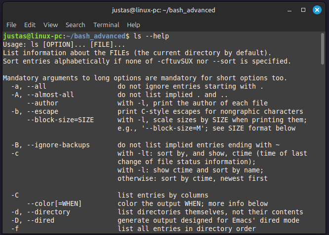
Kiek eilučių yra raw_data_hh_customers.csv faile? Naudok wc --help, kad sužinotum flagą, skirtą eilučių skaičiavimui.
7.2.2 man: manual pages
Kartais reikia daugiau informacijos, kad suprastum, kaip kas veikia. Būtent šią funkciją atlieka man komanda. Jos pagalba gali peržiūrėti išsamius komandų aprašymus. Kadangi man puslapiai yra ilgesni nei --help, jie atspausdinami naudojant less, kurį jau pažįsti iš ankstesnio skyriaus. Keisti puslapius gali su space klavišu, o išeiti su q.
man puslapis įprastai turi tokią struktūrą:
- NAME - komandos pavadinimas ir trumpas aprašymas.
- SYNOPSIS - pagrindinė komandos sintaksė, įskaitant flagus ir argumentus.
- DESCRIPTION - detali informacija apie naudojimą.
- OPTIONS - visų galimų flagų paaiškinimai.
- EXAMPLES - kartais pateikiami praktiniai pavyzdžiai.
man ls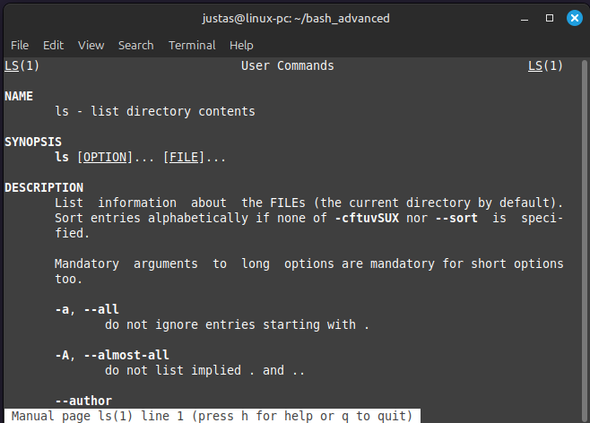
- Prisimeni, jog su
headirtailgalėjai nurodyti kiek eilučių spausdinti? Pvz.,head -n 15atspausdina pirmas 15 eilučių. Atsiverskman headir susirask-n. Ten aprašytas naudojimas-skaičiaus. Dabar pažiūrėk mantailir rask-nsu+naudojimu. - Dabar tavo failas raw_data_hh_customers.csv turi antraštes (header) ir duomenis. Pasinaudojus
headarbatail(pagalvok, kuri čia labiau tinka) bei išmoktais flagais, sukurk naują failą pure_data.csv, kuriame būtų visos originalaus failo eilutės, bet ne antraštė. - Palygink su
wceilučių skaičių viename ir kitame faile ir įsitikink, jog skirtumas tik 1 eilutė. - Su
ls -lharbals -lpalygink, kiek sutaupei vietos, atsisakius vienos eilutės “duomenų”. - Konspektuok
headirtailtame pačiame dokumente, kaip irwc.
7.2.3 tldr
man puslapiai yra labai išsamūs, tačiau kartais jie gali pasirodyti per ilgi. --help gali suteikti trumpą ir aiškią informaciją, tačiau net ir šie puslapiai gali būti per daug sudėtingi pradedantiesiems. Čia į pagalbą ateina tldr - programa, kuri pateikia dažniausiai naudojamus scenarijus ir labai trumpą paaiškinimą apie komandą. Tai dar viena priemonė tavo arsenale, jei pamiršai, kaip veikia komanda.
- Pasitikrink, ar turi
tldrnaudodantwhich tldr. - Prisimink žingsnius, kuriuos reikia atlikti, norint įdiegti programą.
- Įdiek tldr.
- Jeigu reikia, konspektuokis!
tldr komanda priima kaip argumentą kitą komandą. Daugumai standartinių komandų, tldr terminale atspausdins dažniausiai naudojamus flagus bei kelis jų taikymo pavyzdžius.
Pabandyk:
tldr headtldr wctldr cuttldr tldr
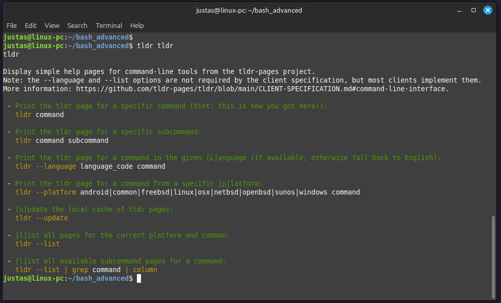
Kaip matai, tldr aprašo ir pačią tldr komandą.
- Norėtum palaipsniui išnagrinėti raw_data_hh_customers.csv failą, bet pamiršai, kaip pasirinkti tam tikrą stulpelį. Pasinaudok
tldr cut. - Jei paleisi
cut ... raw_data_hh_customers.csv, komanda tau atspausdins daug eilučių. Tai būtų neefektyvu. Prisimink, kaip sujungti skirtingas komandas ir pagalvok, kaip galėtum inspektuoti kiekvieną stulpelį atskirai, matant tik pirmas 15 eilučių. Inspektuok terminale pirmus 10 stulpelių, pabandyk suprasti, ar jie būtų vertingi analizei ar ne.
7.2.4 ChatGPT
ChatGPT yra naudingas įrankis Linux naudotojams. Jis nėra labai protingas, bet gana efektyvus, jog padėtų tau dirbti. Keli svarbūs dalykai:
- po registracijos tu gali naudotis geresniu modeliu (yra limitas užklausoms, po to įsijungia paprastensis modelis)
- po registracijos išsisaugo tavo užklausų istorija, o tai padeda turėti ilgesnes sesijas. Ilgesnės sesijos yra naudingos, nes ChatGPT reaguoja į visą sesijos kontekstą.
Svarbu pratintis rašyti užklausas ChatGPT. Štai keli patarimai:
- Angliškai ChatGPT supranta ir atsako geriau nei lietuviškai dėl didesnio duomenų kiekio anglų kalba, iš kurio ChatGPT mokėsi.
- Pradėk užklausą suteikiant kontekstą, o ne tik rašant klausimą.
- Kartais gali norėti, jog ChatGPT elgtųsi kaip tam tikras asmuo. Tai gali suformuluoti savo užklausoje.
Prieš tai tu panaudojai
head 15 raw_data_hh_customers.csv | cut -d "," -f 1arba
cut -d "," -f 1 raw_data_hh_customers.csv | head 15
Tačiau kuris variantas yra geresnis? Išbandyk šias užklausas ir palygink jų atsakymus. Rašyk užklausas pradedant vis naują chat’ą, tai simuliuos atskiras užklausas ir neleis ChatGPT mokytis einamojoje sesijoje.
- “Ar galima naudoti
cut -d "," -f 1 raw_data_hh_customers.csv | head 1” - “Kuri komanda yra efektyvesnė:
head 15 raw_data_hh_customers.csv | cut -d "," -f 1arcut -d "," -f 1 raw_data_hh_customers.csv | head 15” - Dabar suteik daugiau konteksto ir įvertink GPT atsakymą į klausimą: “Aš dirbu su 4 mln. eilučių failu raw_data_hh_customers.csv. Mano tikslas yra peržiūrėti pirmas 15 eilučių kiekvieno stulpelio. Koks komandų head ir cut eiliškumas šioje situacijoje būtų geriausias? Paaiškink savo atsakymą. Elkis taip, tarsi būtum labai patyręs shell (bash) programuotojas.”
Ar pastebėjai skirtumą? Pateikus kontekstą bei paprašius argumentuoti savo pasirinkimą, GPT pateikia kur kas tikslesnį atsakymą. Papildomas prašymas veikti kaip patyręs bash programuotojas dažnai duoda naudingesnę informaciją.
Įsimink:
- Kontekstas: ką tu darai
- Tikslas: kokį rezultatą nori gauti
- Problemos: ką gauni vietoj to, ko negauni, arba kur matai problemą
- Prašymas paaiškinti savo pasirinkimą
- “Agento” kūrimas, pasakant, kaip turėtų elgtis GPT
Yra žingsniai, kurie padės efektyviau dirbti.
7.2.5 Konspektavimas
Galbūt jau pastebi, kad prisiminti visas komandas nėra lengva. Kai kurios taps įprasta ir nuolat naudojama atmintimi, tačiau kitos gali pranykti iš atminties. Dirbant analitikoje ar programavime, niekada neprisiminsi visko. Tiesiog reikia įprasti naudotis savo “antrinėmis smegenimis” - konspektuotis viską taip, kad prireikus galėtum greitai rasti reikiamą informaciją.
Pavyzdžiui, analitikai dažnai išsisaugo ilgus duomenų užklausų kodų gabalus (code chunks), ypač jei jų prireikia reguliariai. Programuotojai taip pat dažnai naudoja įrankius kaip Obsidian ar Joplin konspektams.
Aš dažnai naudoju Obsidian arba Joplin, kad konspektuočiausi apie kilusias problemas, kaip jas sprendžiau, kas veikė ir kas ne. Konspektavimas prasideda dar tebesitęsiant problemai. Pvz., kai mano kompiuteris negalėjo sukurti VPN tunelio, kartu su ChatGPT bandžiau spręsti kilusias problemas. Visa šį procesą aš užfiksavau, kad ateityje galėčiau greičiau rasti sprendimus.
Kitas scenarijus - kaip aš įdiegiu savo Linux sistemą. Kadangi mano kompiuteris naudojamas tiek darbo, tiek asmeniniais tikslais, man svarbu turėti gerai aprašytą procesą, ką turiu instaliuoti, po ko ir kodėl. Po instaliavimo proceso, nuolat pridedu naujas programas į šį dokumentą, kad visada turėčiau aktualiausią jo versiją. Nedarydamas to, sukuriu techninę skolą (tech debt) - terminą, naudojamą IT pasaulyje, kai kažkas padaroma greitai, paliekant problemas ateičiai. Visada venk tech debt, nes dažnai sutaupai tuo metu 5 minutes, kurios paskui tau kainuos 55.
- Peržiūrėk Getting Started pirmus 4 skyrius apie Obsidian.
- Įdiek Obsidian naudojant Flatpak. Susikurk “vault” (direktoriją, kurioje bus visi Obsidian užrašai, idealu - į savo namų serverį Nextcloud).
- Perkelk savo konspektus kaip naujus užrašus. Pagalvok, kokia būtų geriausia aplankų ir failų struktūra. Nebijok, ji keisis ateityje.
Obsidian naudoja Markdown formatą. Peržiūrėk šį Cheat Sheet, kaip jis naudojamas.
Taip pat rekomenduoju peržiūrėti / skaityti:
7.3 Tinklo komandos
Šioje dalyje išmoksi naudoti ping, curl ir wget, kad galėtum patikrinti ryšį bei atsisiųsti duomenis.
7.3.1 ping komanda
Filmuose apie povandeninius laivus dažnai girdime sonarų “ping” garsą, kuris naudojamas sekant objektus po vandeniu. Panašiai ir tu gali naudoti ping komandą, kuri padeda patikrinti, ar turi prieigą prie interneto, ir ar tavo norimas pasiekti serveris yra pasiekiamas.
Jeigu nėra garso, originalas Youtube
Linux sistemoje komanda ping <host> leidžia nurodyti norimą URL ar IP adresą. Skirtingai nei Windows sistemoje, Linux ping komanda nesustoja automatiškai, todėl rekomenduojama naudoti -c (count) flagą, kad nurodytum, kiek ping signalų turėtų būti siunčiama, pvz., 5.
Pabandyk
ping -c 5 infraplanas.ltTu turėtum pamatyti panašią išvestį:
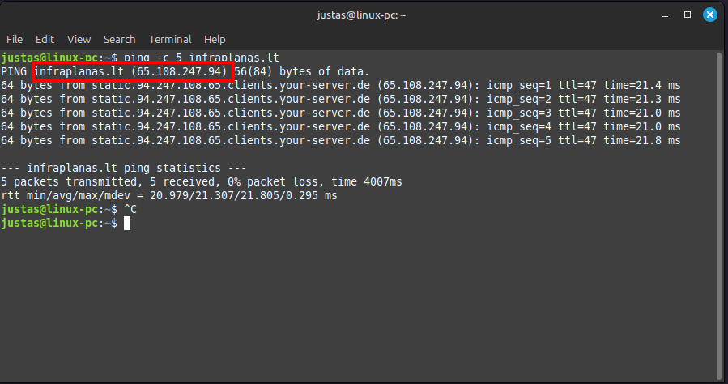
Ping išvestis
- ping nurodo, kokį adresą pingina, ir pateikia IP adresą (pvz., 65.108.247.94).
- Turėtum gauti 5 eilutes ping’ų atgal su meta duomenimis, tarp jų - kiek laiko užtruko signalui nueiti ir grįžti.
- ping komanda sustos po 5 kartų
Dabar tu gali pabandyti naudoti šį adresą norint atsidaryti tinklapį:
brave-browser 65.108.247.94Gali brave-browser pakeisti firefox ar kita sistemoje įdiegta interneto naršykle.
Kaip matai, tai veikia. Bet taip nebus visada. Pateiksiu trumpą paaiškinimą po praktikos.
- Pasinaudok
tldrir identifikuok pagrindiniuspingflagus. Kada ir kokius naudotum? Konspektuokis. - Pabandyk pinginti 3 kartus vinted.lt.
- Bandyk atsidaryti pingintą IP su
brave-browser <host ip>.
Kodėl ping veikia, bet atidaryti tinklapį pagal IP kartais nepavyksta?
Trumpai apie tai, kodėl tau pavyko pingtini vinted.lt, bet nepavyko atsidaryti 172.64.150.26.
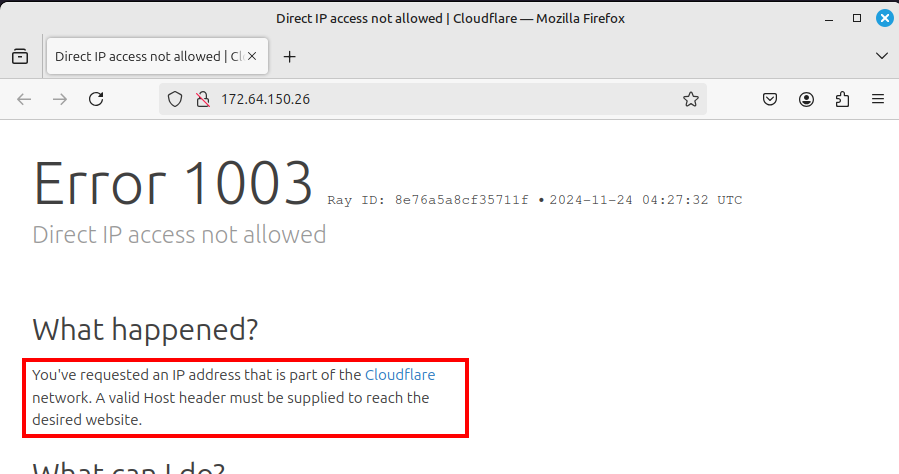
Kai naršyklėje įrašai, pvz., vinted.lt, tavo kompiuteris dar neturi informacijos, koks tai konkretus IP adresas. Todėl jis siunčia užklausą į DNS (Domain Name System) serverį, kuris pasako, koks IP adresas atitinka tą domeną. Kai žinai IP, tavo kompiuteris gali siųsti užklausas tiesiai į tą serverį.
Kai kurie tinklapiai, kaip infraplanas.lt, gali būti pasiekiami tiesiogiai per IP, nes jie yra paprasti ir neturi papildomų saugumo sluoksnių. Tačiau dauguma šiuolaikinių svetainių naudoja apsaugos priemones, kaip Cloudflare, kurios veikia kaip ugniasienė ir apsaugo serverius nuo kenkėjiškų veiksmų. Kai bandai pasiekti tokį serverį tiesiai per IP, Cloudflare gali neleisti užmegzti ryšio, nes IP užklausos neperduoda visos būtinos kontekstinės informacijos, pvz., kokiame URL kontekste užklausa buvo atlikta, t.y. trūksta tam tikros informarijos užklausos header dalyje.
- Pabandyk atjungti savo Wi-Fi ryšį ir pinginti, pvz., lrt.lt. Gauni kitokią išvestį. Pagalvok, ar tai yra stdout ar stderr? Ar galėtum skirtingai nukreipti išvestis? Paeksperimentuok.
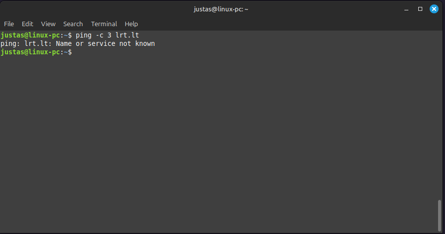
7.4 curl ir wget
curl ir wget yra įrankiai darbui su tinklo užklausomis, tačiau jų paskirtis skiriasi. wget yra orientuotas į failų atsisiuntimą, palaiko rekursyvų atsisiuntimą ir automatiškai atnaujina nutrauktus parsisiuntimus. curl yra universalesnis ir tinka ne tik failų atsisiuntimui, bet ir duomenų siuntimui (pvz., API užklausoms). Pagal nutylėjimą, curl išveda duomenis į terminalą.
7.4.0.1 wget
Atsidaryk https://data.gov.lt/ ir surask “Transporto priemonių valstybiniai numeriai pagal markę ir modelį” duomenis.
Papaudus ant “Duomenys” ir “Atsiųsti”, tu suprantama gali atsisiųsti duomenis. Bet toks būdas nebūtų automatizuojamas ateityje, kai norėsi atnaujinti duomenis.
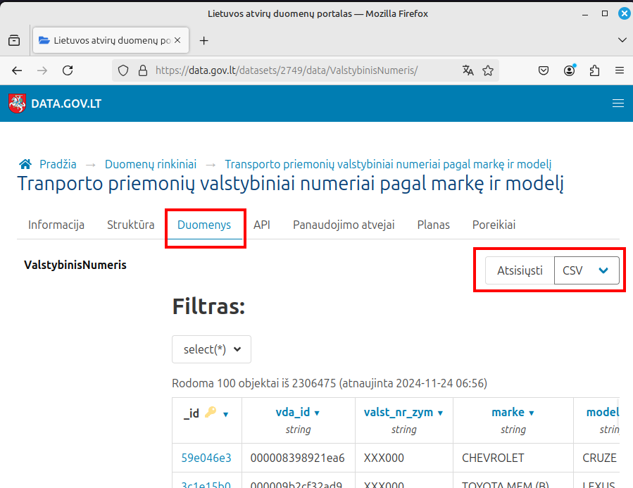
Nueik į API skiltį, nusikopijuok adresą esančios užklausos adrese.
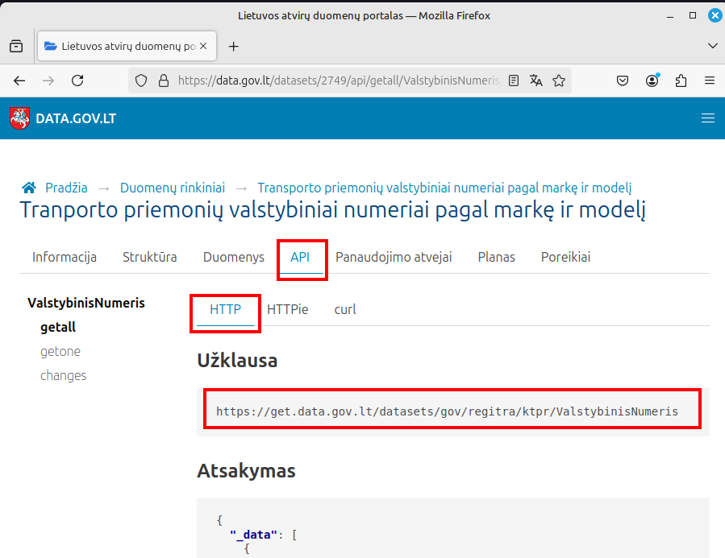
Terminale irašyk ir paleisk šią komandą:
wget https://get.data.gov.lt/datasets/gov/regitra/ktpr/ValstybinisNumeris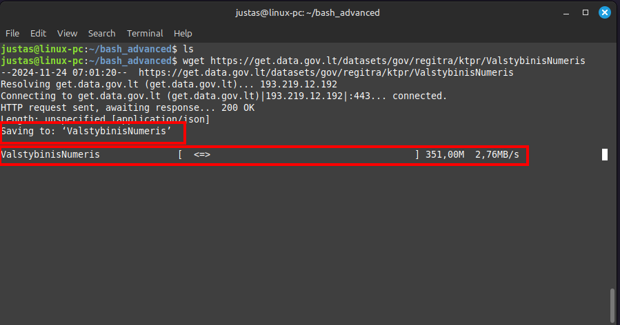
Peržiūrėk išvestį. wget iš pradžių rezolvin’a URL adresą ir gauna IP (pvz., 193.219.12.192), tada jungiasi prie jo. Gauni atsakymą, kad prisijungti pavyko (200 OK), ir tada duomenys pradeda parsisiųsti. Failas išsaugomas kaip ValstybinisNumeris.
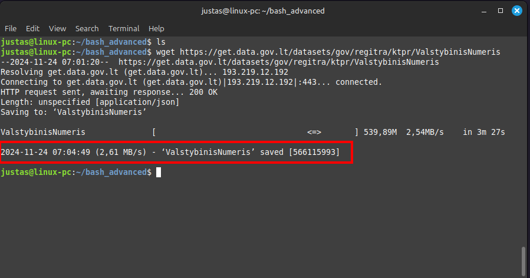
Tačiau, jei bandysi naudoti komandą head ValstybinisNumeris, pastebėsi, kad terminalas nesustoja spausdinti išvesties. Taip yra dėl to, kad duomenys yra JSON formatu, kuriame visi duomenys yra įrašyti vienoje eilutėje. JSON formatas yra labai naudingas duomenų mainams, tačiau šiuo atveju jis nėra tinkamas, kai nori peržiūrėti duomenis eilutėmis. Šis formatas bus aptartas išsamiau vėliau.
Net ir naudojant flagą --output-document ValstybinisNumeris.csv, kuris leidžia nurodyti pageidaujamą failo pavadinimą, po .csv failu vis tiek slėpsis JSON formatu užkoduoti duomenys. Pabandyk dar kartą atsisiųsti failą su komanda:
wget https://get.data.gov.lt/datasets/gov/regitra/ktpr/ValstybinisNumeris --output-document ValstybinisNumeris.csvKai atidarysi šį failą naudojant LibreOffice Calc, pastebėsi, kad duomenys nėra tinkamai suformatuoti:
libreoffice --calc ValstybinisNumeris.csv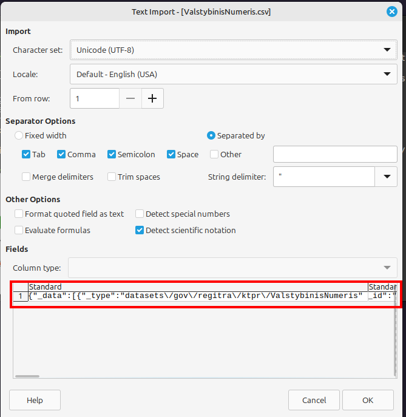.
Panašu, kad duomenys serveryje saugomi ne visai tokiu formatu, koks mums būtų patogiausias. Priežastis ta, kad https://data.gov.lt/ veikia kaip vartotojui draugiškas fasadas, tačiau už jo slepiasi sudėtingesnė sistema, pavadinta duomenų spinta. Ši sistema gali pateikti duomenis įvairiais formatais.
Norint pasiekti tą mažiau gražią “spintą”, sek šias nuorodas:
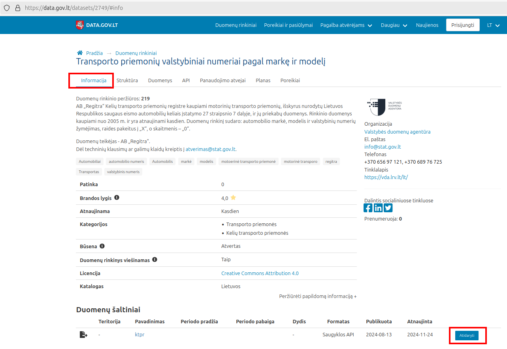.
Viršuje pamatysi visus galimus duomenų parsisiuntimo formatus. Jei naršyklėje paspausi kairės pelės mygtuku ant CSV, pradėsi automatiškai atsisiųsti failą ValstybinisNumeris.csv. Norint gauti nuorodą, kurią gali panaudoti wget komandoje, spausk dešiniu pelės mygtuku ant CSV ir meniu pasirink “Kopijuoti nuorodą” (copy link).
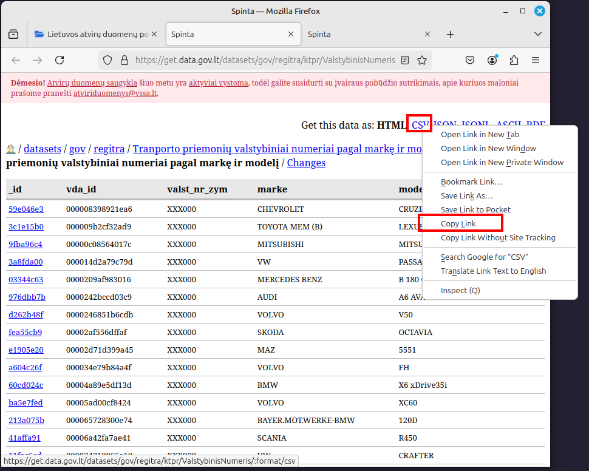.
Nuoroda, kurią turėtum gauti, atrodo taip:
https://get.data.gov.lt/datasets/gov/regitra/ktpr/ValstybinisNumeris/:format/csv
Kaip matai, ji nedaug tesiskiria nuo tos kurią turėjai:
https://get.data.gov.lt/datasets/gov/regitra/ktpr/ValstybinisNumeris
Matomas skirtumas yra /:format/csv dalelė URL adrese, kuri nurodo, jog duomenys turi būti parsiunčiami CSV formatu. Šis papildymas užtikrina teisingą duomenų formatą tavo naudojimui.
Tai užtikrins, kad naudojant wget komandą, gausi duomenis būtent CSV formatu - tokiu, kuris yra lengvai analizuojamas ir atidaromas su įprastinėmis programomis, tokiomis kaip LibreOffice Calc ar Excel.
- Naudojant
rmišsivalyk darbo direktoriją nuo nereikalingų failų. - Naudodajant
wgetir nukopijuotą nuorodą, parsiųsk duomenis su--output-document ValstybinisNumeris.csv. - Kol duomenys siunčiasi - pasidaryk kavos ☕.
- Atspausdink pirmas 5 ValstybinisNumeris.csv failo eilutes ir įsitikink, jog duomenys tokie, kokių tikėjaisi.
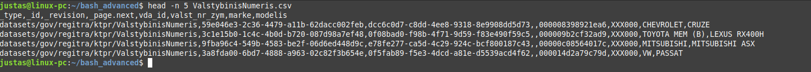
7.4.1 curl
curl yra universalesnė programa, tinkama ne tik failų atsisiuntimui, bet ir duomenų siuntimui (pvz., API užklausoms). Ji veikia su daugiau tinklo protokolų ir pagal nutylėjimą išveda duomenis į terminalą, o ne į failą.
Jei paleistum curl be nustatymų, kaip pvz.,:
curl https://get.data.gov.lt/datasets/gov/regitra/ktpr/ValstybinisNumeris/:format/csvpamatytum, kaip duomenys skrieja terminale:
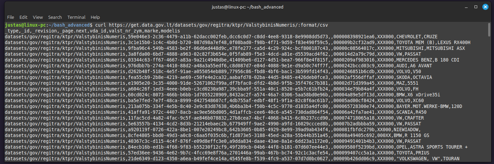
- Naudok
tldr curl,curl --helpir ChatGPT, kad identifikuotum pagrindinius flaguscurlkomandai - Naudojant
curl, parsisiųsk ValstybinisNumeris.csv failą. - Tinklapyje https://data.gov.lt susirask duomenis Valstybės apdovanojimai. Parsisiųsk juos .csv formatu su
wgetir išsaugok pavadinimu apdovanojimai.csv. Prisimink, jog URL adresą gali pasiimti iš API skiltyje esančios užklausos adreso, tik turėtum pridėti/:format/csv. - Su
curlparsisiųsk “Pacientų registracijos paslaugoms Žalgirio klinikoje” ir išsaugok kaip reg_zalgiris.csv.
7.5 Failų Redagavimas ir Apdorojimas
Praeitame skyriuje tu jau išmokai naudotis komanda sed, kuri yra labai galinga apdorojant raw duomenis. Dabar dar praplėsi savo supratimą, kaip gali išnaudoti uniq, kad geriau susipažintum su failo struktūra ar netgi atliktum mini analizes. Taip pat susipažinsi su JSON formatu, nes ne visada gali pavykti jo išvengti, o apdoroti JSON duomenis nėra labai sudėtinga net ir naudojant bash. Tiesa, Python tai padaryti lengviau.
7.5.1 uniq
Tu jau moki surūšiuoti failo eilutes su komanda sort, tiek didėjančia (A-Z), tiek mažėjančia (Z-A) tvarka, taip pat surūšiuoti pagal skaičius. uniq komanda leidžia tau parodyti unikalias eilutes ir, jei reikia, jas suskaičiuoti.
Šis komandų junginys head reg_zalgiris.csv | cut -d "," -f 13 | sort paima pirmas 10 eilučių iš reg_zalgiris.csv failo, supjaustydamas pagal , kaip skirtuką tarp stulpelių, pasirenka 13-ą stulpelį, o sort surikiuoja duomenis didėjančia tvarka (A-Z).
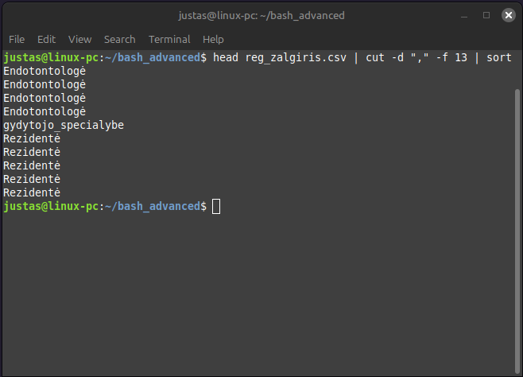
Komanda uniq leidžia pamatyti unikalias reikšmes, tik uniq aptinka duplikatus tik tada, kai jie yra šalia. Todėl uniq beveik visada naudojama kartu su sort. Pvz., head reg_zalgiris.csv | cut -d "," -f 13 | sort | uniq.
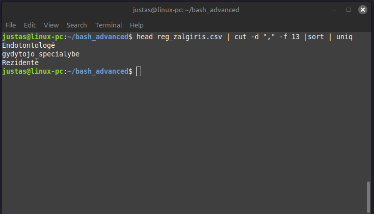
Retais atvejais tau gali būti įdomu sužinoti tik eilutes, kurios neturi duplikatų. Tada naudotum flagą -u. Šiuo atveju, jei „gydytojo_specialybe“ kartojasi tik vieną kartą (natūralu, nes tai duomenų antraštė), todėl uniq -u grąžina tik šią eilutę.
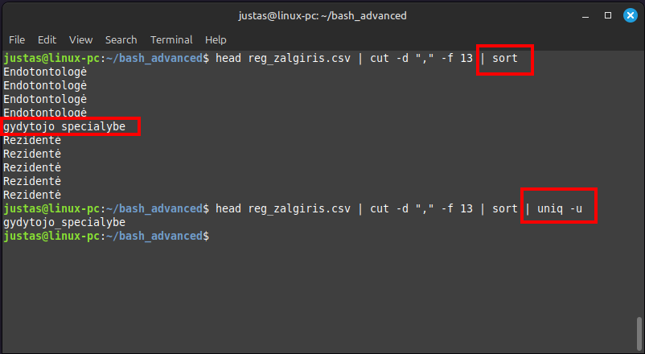
Kur kas praktiškesnis yra flagas -c, kuris suskaičiuoja, kiek yra vienodų eilučių.
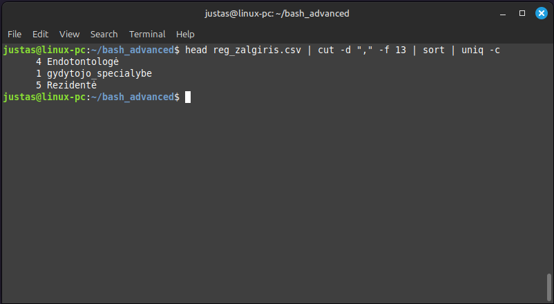
Kaip matai, turime problemą - stulpelio antraštė (header) figūruoja kaip duomenys. Jei tau tik reikia grubiai įvertinti duomenų teisingumą ir juos geriau suprasti, tai gali netrukdyti. Bet galima ir išsivalyti.
- Kokias 2 strategijas (komandas) reg_zalgiris.csv turi savo arsenale, kad neįtrauktum eilutės su gydytojo_specialybe į tolimesnius veiksmus? Prisimink, ką išmokai
--helpdalyje, bei prisimink komandą, kuri filtruoja eilutes -grep. - Pasinaudok viena iš šių strategijų ir suskaičiuok, pas kokių specialybių daktarus buvo daugiausiai ir mažiausiai registracijų.
Turėtum gauti šį rezultatą:
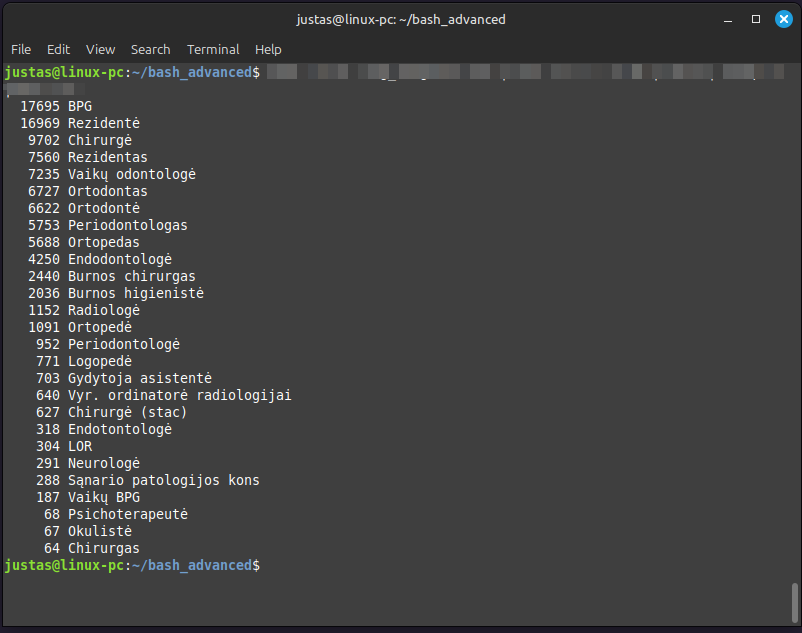
Kaip matai, rezultatas nėra tobulas, nes dabar turi 6622 “Ortodontė” ir 6727 “Ortodontas”. Nors specialybė ta pati. Jei tave domintų, kiek buvo registracijų pagal specialybes, reikėtų sukurti taisykles su sed komanda, kur suvienodintum profesijų pavadinimus ir padarytum juos neutralius lyčiai.
7.5.2 JSON Duomenų Formatas
JSON (JavaScript Object Notation) yra duomenų formatas, kuris yra lengvai skaitomas žmonėms ir lengvai apdorojamas kompiuteriams. JSON dažnai naudojamas duomenų perdavimui tarp kliento ir serverio, nes jis yra palaikomas daugelio programavimo kalbų. Todėl su šiuo formatu susiduria tiek back-end inžinieriai, kurie turi paimti duomenis tokiu formatu ir gebėti patalpinti juos į duomenų bazes, tiek front-end inžinieriai kurdami tinklapių atvaizdavimą, tiek dažnai ir duomenų analitikai, kurie turi mokėti paversti (angl. parse) šiuos duomenis į tabuliarinius duomenis.
JSON struktūros pagrindinės savybės:
- JSON duomenys yra organizuojami kaip „raktas-vertė“ (key:value) poros.
- Palaiko paprastas duomenų struktūras, tokias kaip masyvai ir objektai.
- JSON pateikia duomenis aiškiai struktūrizuotu formatu.
Štai nedidelis JSON pavyzdys, kuriame pateikiami keli asmens duomenys:
{
"name": "Jonas",
"age": 30,
"email": "jonas@example.com",
"isStudent": false,
"courses": [
"Matematika",
"Informatika",
"Fizika"
],
"address": {
"street": "Gedimino pr. 1",
"city": "Vilnius",
"country": "Lietuva"
}
}Šiame JSON pavyzdyje:
- „name“, „age“, „email“, ir „isStudent“ yra paprastos “raktas-vertė” poros.
- „courses“ yra masyvas (sąrašas) su keliomis vertėmis.
- „address“ yra sudėtinis objektas, kuriame yra kitos “raktas-vertė” poros.
7.5.3 jq
jq yra galingas komandinės eilutės įrankis, skirtas dirbti su JSON duomenimis Linux aplinkoje. Naudojant jq tu gali lengvai analizuoti, filtruoti, modifikuoti ir formatuoti JSON duomenis tiesiogiai terminale. Tai ypač naudinga dirbant su API atsakymais arba duomenų failais JSON formatu.
Pasitikrink, ar jq įdiegta, ir jei ne, prisimink, kaip įdiegti programas naudojant terminalą, ir įsidiek jq.
Kadangi tavo parsiųsti failai yra dideli, su jq susipažink naudojant failą zverys.json, kurį susikurk terminale paleidus šią komandą:
echo '[{"species":"Elnias","age":5,"weight":150,"location":"Miškas A"},{"species":"Briedis","age":8,"weight":600,"location":"Miškas B"},{"species":"Lūšis","age":3,"weight":20,"location":"Miškas C"},{"species":"Lapas","age":4,"weight":35,"location":"Miškas D"},{"species":"Lapė","age":6,"weight":15,"location":"Miškas E"}]' > zverys.jsonKaip matai, dabar viskas yra vienoje eilutėje, panašiai kaip ir su ValstybiniuNumeriu duomenų failu.
Naudojant jq, tu gali išvesti jį gražiai suformatuotą, kad būtų lengviau skaityti. jq komandos struktūra yra tokia: jq <filteris> <failas>. Paprasčiausias filtras (jokio) yra .. Čia . operatorius nurodo visą JSON duomenų struktūrą. Kai naudoji jq ., tu sakai, kad nori išvesti visą JSON turinį, koks jis yra, tik galbūt gražiai suformatuotą, kad būtų lengviau skaityti.
jq . zverys.jsonRezultatas atrodo taip:
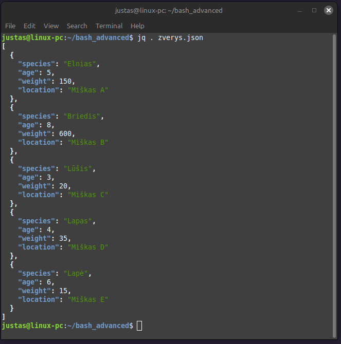
Jei nori išgauti tik visų žvėrių rūšis (“species”), t. y., pasirinkti vieną stulpelį, gali filtruoti juos:
.operatorius viduje: Kaip ir ankstesniame pavyzdyje, tai yra pradinis taškas, nuo kurio pradedama navigacija per JSON struktūrą.[]operatorius: Tai yra masyvo operatorius, kuris nurodojq, kad turi būti iteruojama per kiekvieną JSON masyvo elementą. Kiekvienas elementas masyve yra laikomas JSON objektu. Šiuo atveju, kiekvienas žvėris.- species raktas: Tai yra specifinio lauko pavadinimas kiekviename masyvo objekte. Šiuo atveju tai reiškia, kad iš kiekvieno masyvo elemento (kuris yra objektas) bus išimta vertė po raktu “species”.
jq '.[].species' zverys.jsonRezultatas:
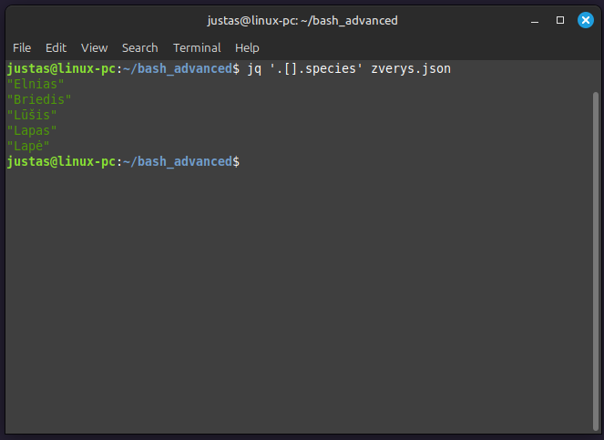
Jei nori pasirinkti pirmą masyvą (žvėrį) iš sąrašo:
- Masyvo operatoriaus viduje
[]reikia įrašyti konkretų numerį (indeksą), kuris prasideda nuo 0.
jq '.[0]' zverys.jsonRezultatas:
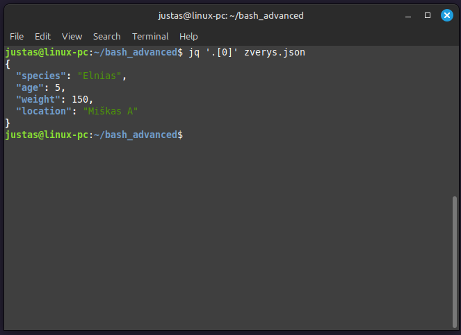
Filtravimas pagal sąlygą: Jei nori pasirinkti tik tuos žvėris, kurių svoris (“weight”) yra didesnis nei 100:
jq '.[] | select(.weight > 100)' zverys.json.operatorius: Tai nurodo visą JSON duomenų struktūrą, pradedant nuo šaknies.[]operatorius: Šis operatorius nurodo jq, kad jis turėtų iteruoti per kiekvieną JSON masyvo elementą. Kiekvienas elementas yra JSON objektas.|operatorius: Tai yra pipe operatorius, kuris leidžia peradresuoti praeinantį elementą į sekančią komandos dalį. Tai veikia panašiai kaip shell komandose, leidžiant sujungti operacijas.select(.weight > 100):select(...)funkcija: Ji naudojama filtruoti elementus pagal tam tikrą sąlygą. Tik tie elementai, kurie atitinka sąlygą, yra išvedami į rezultatą..weight > 100sąlyga: Šioje vietoje, kiekvieno masyvo elemento “weight” laukas tikrinamas, ar jo vertė yra daugiau nei 100. Tik tie objektai, kurių “weight” yra didesnis nei 100, bus palikti rezultate.
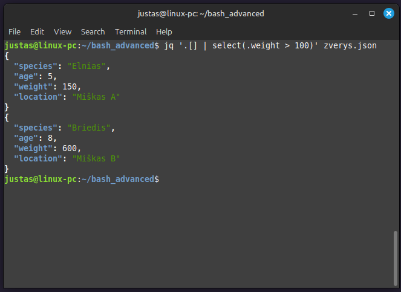
Jeigu nori JSON duomenis paversti į .csv formatą, gali naudoti:
jq -r '.[] | [.species, .age, .weight, .location] | @csv' zverys.json jq -r: Naudojant-r(arba--raw-output) flagą,jqišveda neapdorotą išvestį, kuri pašalina kabutes aplink JSON reikšmes. Tai ypač naudinga, jei išvestyje norime gauti paprastą tekstą, kurio formatas nebus sutrikdytas dvigubomis kabutėmis..operatorius: Tai nurodo JSON šaknį ir suteikia kontekstą, nuo kurio pradedame veikti.[]operatorius: Jis nurodo, kad dirbame su JSON masyvu ir iteruojame per kiekvieną masyvo elementą. Kiekvienas elementas yra JSON objektas.|operatorius: Tai yra pipe operatorius, kurį naudojame perduoti esamą išvestį į kitą operaciją. Šioje komandoje jis naudojamas du kartus, kad kiekvienas masyvo elementas (žvėris) būtų transformuotas į specifinį formatą ir po to paverstas CSV.[.species, .age, .weight, .location]: Ši dalis suformuoja kiekvieno masyvo elemento laukus, kuriuos norime išgauti, kaip JSON masyvą. Kiekvienas elementas masyve yra paimamas iš atitinkamo JSON objekto lauko (species, age, weight, location). Tai leidžia pasirinkti tik konkrečius laukus, kuriuos norime paversti į CSV formatą.@csv: Tai yra jq operatorius, skirtas paversti JSON masyvus į CSV formatu atvaizduotas eilutes. Šis operatorius paverčia JSON masyvus į kableliu atskirtas reikšmes, t.y., CSV formatą, ir pasirūpina, kad kiekviena reikšmė būtų atitinkamai pabėgta (escaped) pagal CSV standartus.
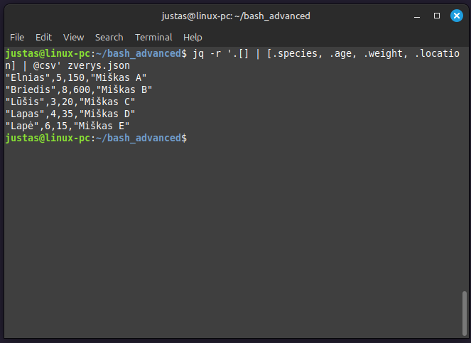
Dabar rezultatą galima išvesti nukreipiant į failą su > arba naudoti tolimesniame apdorojime su kitomis bash komandomis.
Su
curlarbawgetparsisiųskhttps://get.data.gov.lt/datasets/gov/vulzk/registracija/Registracija, kaip išvesties failo pavadinimą pasirink reg_zalgiris.json. Jei reikia, prisiminkcurlflagus su--helparbatldr.Išfiltruok visus duomenis, kur registracija buvo pas “Ortopedas”. Pasiimk tik gydytojo_id ir gydytojo_specialybe kaip stulpelius, tada paversk filtruotą masyvą į .csv formatą ir su
sortbeiuniqatsakyk, pas kiek skirtingų Ortopedų buvo registracijos?
Atkeipk dėmesį, šis JSON objektas turi kelis laukus (**_data, _page). * _data** yra masyvas, kuriame yra vienas ar daugiau JSON objektų, ir tavo norima informacija yra būtent čia. * **_page** yra kitas masyvas, kurio nenori. * Kadangi gydytojo_specialybe yra masyvo elemente po **_data** raktu, reikia iš pradžių patekti į šį masyvą, o tada atlikti filtravimą.
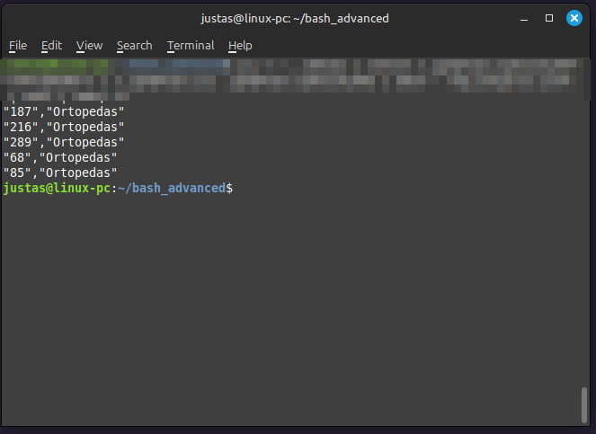
Identifikuok, kurie laukai iš galimų būtų prasmingi tolimesnei analizei. Paversk reg_zalgiris.json į csv formatą visiems pasirinktiems stulpeliams ir perleisk duomenis į failą reg_zalgiris_from_json_to_csv.csv.
Jei dabar naudosi
head, pamatysi, jog trūksta lentelės antraščių (header). Atsidaryk ChatGPT ir suformuok, ką bandai daryti, ką gauti. Kaip atrodo tavo duomenys. Perrašyk komandas ir perkurk reg_zalgiris_from_json_to_csv.csv failą.Susikonspektuok pagrindinę informaciją!
Tau labai praverstų prieš akis turėti .json struktūrą:
{
"_data": [
{
"_type": "datasets/gov/vulzk/registracija/Registracija",
"_id": "d3cf2132-dd72-459a-9624-e17e62419050",
"_revision": "f77c9ebd-f2d3-483b-ae76-fd3c6a1f91d8",
"_base": null,
"registracijos_id": "355549",
"gydymo_registracijos_data": "2013-11-28T08:00:00",
"registracijos_iraso_sukurimo_data": "2013-07-02T00:00:00",
"registracijos_iraso_keitimo_data": "2013-11-27T13:11:00",
"paciento_id": "1978fdae338a6ca",
"paciento_lytis": "V",
"paciento_gimimo_metai": "1977-01-01T00:00:00",
"gydytojo_id": "99",
"gydytojo_specialybe": "Endotontologė"
}
],
"_page": {
"next": "WyIzNTU1NDkiLCAiZDNjZjIxMzItZGQ3Mi00NTlhLTk2MjQtZTE3ZTYyNDE5MDUwIl0="
}
}7.6 Failų Paieška
Šiame skyriuje susipažinsi su svarbiomis komandomis, kurios padės tau rasti failus tavo sistemoje. find komanda suteikia galimybę ieškoti failų ir direktorijų naudojant detalius paieškos kriterijus, tokius kaip pavadinimas, tipas, data ir kt. locate komanda naudoja Linux sistemose generuojamą failų indeksą greitai failų paieškai. whereis yra skirta rasti vykdomojo failo (binary), dokumentacijos ir kitos susijusios informacijos vietą.
7.6.1 find
Komanda find yra naudojama ieškoti failų ir direktorijų pagal pavadinimą, dydį, datą, teises ir kitus kriterijus.
Bazinė find komanda atrodo taip:
find /path/to/search -options criteria -options criteriaPažiūrėk savo dabartinę darbinę direktoriją. Kokius failus joje turi, ir kokie yra jų dydžiai.
Kadangi šiuo atveju tik keli failai, tai gali pasirodyti ne itin įdomu. Patikrink, ar turi shell_part_2 savo namų direktorijoje. Jei ne, paleisk skriptą, kad ji vėl būtų sukurta (žr. praėjusio skyriaus pradžią).
Ieškoti failų esamoje darbinėje direktorijoje (t.y. “čia”) galima naudojant taško notaciją .. Tačiau dažniau dirbsi su ~, t.y. nuoroda į savo namų direktoriją. Tavo ir mano terminalo išvestys gali skirtis, tad nenustebk, jei matysi daugiau ar mažiau failų.
Pakeisk savo darbinę direktoriją į namų su cd ~ arba tiesiog cd.
Komandai find pirmasis argumentas yra kur ieškoti. Dažniausiai tai gali būti:
find .- ieškoti aktyvioje direktorijojefind ~- ieškoti namų direktorijojefind /- ieškoti root direktorijoje (t.y. visame kompiuteryje)find ~/Downloads- ieškoti vartotojo Downloads direktorijoje arba kitoje konkrečiai nurodytoje direktorijoje
find priima daug skirtingų nustatymų (flagų), vienas pagrindinių yra -name.
Pavyzdžiui, suraskime, kur yra failas su registracijomis į Žalgirio kliniką. Tarkime, prisimeni tik, kad ten buvo “zalgiris” pavadinime. Pirmoji komanda negražina jokio failo, nes jo nerado. find, kaip ir dauguma bash komandų, gali veikti su “wildcards” (pakaitos simboliais):
find ~ -name zalgiris
find ~ -name *zalgiris*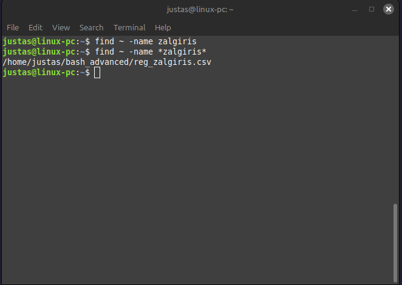
Dabar, jei nori surasti failą su valstybiniais numeriais, tačiau find ~ -name *valstyb* nieko negrąžina, tai yra todėl, kad find yra “case-sensitive”, kaip ir visa BASH aplinka. Panašiai kaip ir su kitomis komandomis, gali pasinaudoti -iname, kad paieška nebūtų jautri raidžių dydžiui:
find ~ -name *valstyb*
find ~ -iname *valstyb*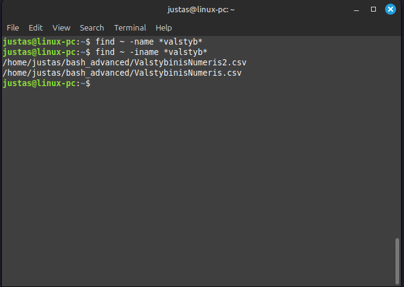
Jei nenurodysi -name <pavadinimas>, tada find komanda ieškos visų failų ar direktorijų, atitinkančių kitus nurodytus kriterijus; jei nebus jokio kriterijaus, tada ji suras tiesiog visus failus ir direktorijas bei nuorodas. Sekančioje komandoje find ieško visų failų, direktorijų ir nuorodų bash_advanced dirkeotrijos viduje.
find bash_advanced/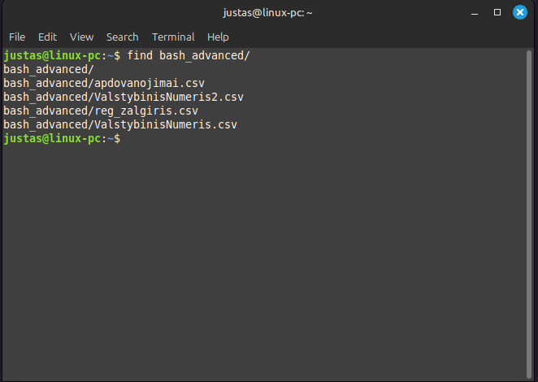
Kartais gali norėti, kad find grąžintų ne tik rastų failų adresus, bet ir daugiau informacijos. Tada gali panaudoti -ls flagą. Jis iš esmės panašus tau įprastą ls komandą.
find bash_advanced/ -ls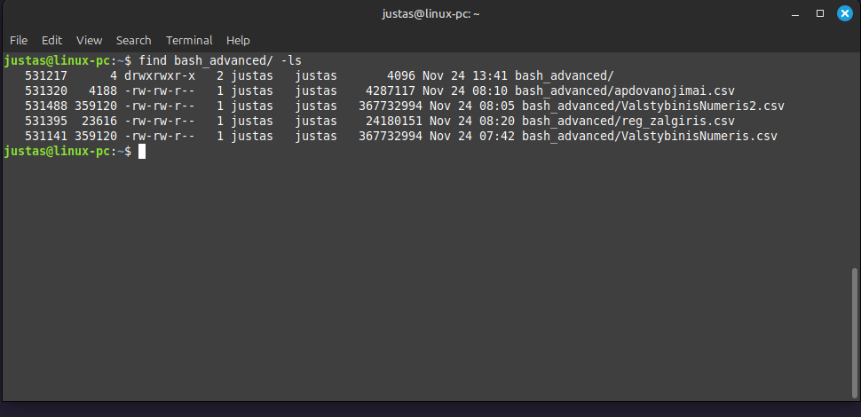
Gali apriboti paiešką pagal tai, ko ieškai: ar tai yra failas (f), direktorija (d), ar nuoroda (l). Ši komanda ieško tipo - direktorijos, kurios pavadinime yra žodis prasidedantis “Do”.
find ~ -type d -name "Do*"Kaip matai find grąžina ir direktorijas, kurios yra paslėptos.
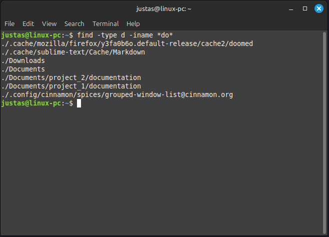
Jei tave domina rasti failus, kurie užima daug arba labai mažai vietos, šiuo atveju tau padės -size flagas. Jis priima skaičius žmonėms suprantamu formatu, pvz., 10M = 10 megabaitų, 1G = 1 gigabaitas ir t.t. Norint nurodyti failų dydį, gali naudoti - arba + prieš skaičių, kad sakytum “mažesnis nei” arba “didesnis nei”.
Jei nurodysi skaičių be pliuso ar minuso, find ieškos failų, kurių dydis lygus nurodytam skaičiui.
find -type f -size -300M
find -type f -size 300M
find -type f -size +300M[]
Gali norėti ieškoti failų pagal jų:
- Sukūrimo datą
c - Modifikavimo datą
m - Prieigos datą
a
Tokiu atveju turėtum naudoti flagus -[acm]time (pasirink reikiamą raidę) ir nurodyti dienas. -n reikš per paskutines n dienų, +n reikš “daugiau kaip n dienų”. Turėk omenyje, jog dienas find vertina kaip kalendorines. Taip pat, jei nori, gali sujungti kelis reikalavimus į vieną, pavyzdžiui: ieškoti failų, kurie buvo sukurti daugiau kaip prieš 2 dienas -ctime +2, bet (ir) mažiau kaip prieš 7 dienas -ctime -7.
find ~ -type f -ctime +2 -ctime -7Paleidus šią komandą, pamatysi, kad tikėtina, turi nemažai failų, ir galbūt norėsi apriboti, kaip “giliai” find turėtų ieškoti. Pabandyk panaudoti -maxdepth arba -mindepth. Šie argumentai yra globalus, todėl juos turėtum rašyti iškart po find ~.
find ~ -maxdepth 1 -type f -ctime +2 -ctime -7 []
Komanda find priima ir loginius operatorius: -and, -or, ir ! (šauktukas, kuris reiškia “ne”). Nenustebk, jei kartais pamatysi trumpinius -a ir -o.
Štai komandos, kurios ieško failų, kurie yra sukurti daugiau nei prieš 2, bet mažiau nei prieš 7 dienas, ARBA ir IR kai jų dydis yra daugiau nei 300MB.
find ~ -maxdepth 2 -type d -ctime +2 -ctime -7 -or -size +300M
find ~ -maxdepth 2 -type d -ctime +2 -ctime -7 -and -size +300MKaip matai, -or leidžia rasti daugiau, nes užtenka, kad bent viena sąlyga būtų patenkinta, tuo tarpu -and reikalauja, kad visos sąlygos būtų patenkintos.
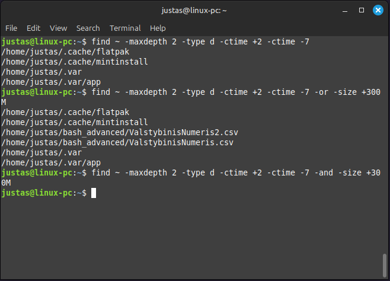_
Ką daryti, jei nori sujungti daugiau sąlygų arba sukurti sudėtingesnį loginį algoritmą? Tam gali išnaudoti skliaustus. Tačiau juos turėsi pabėgti su ( ir ), kad find ieškotų ne skliaustelių pavadinime.
Štai kaip galima ieškoti failų, kurie yra didesni nei 2M ir mažesni nei 100M IR ARBA .csv, arba .txt formato:
find ~ -size +2M -size -100M \( -iname *.txt -or -iname *.csv \)Svarbu paminėti, kad būtina turėti tarpus aplink skliaustus! Jei sujungi kelis reikalavimus, kaip -size +2M, -size -100M, jie sujungiami pagal nulytijimą su -and, todėl nebūtina jo nurodyti aiškiai.
Dabar prieikime prie pavojingesnių komandų!
find turi nustatymą -delete, kuris visus surastus failus, rastus pagal nurodytus parametrus, ištrins. Naudok -delete tik tada, kai esi visiškai tikras, kad viskas, kas randama, gali būti trinama.
find ~ -name "*.txt" -delete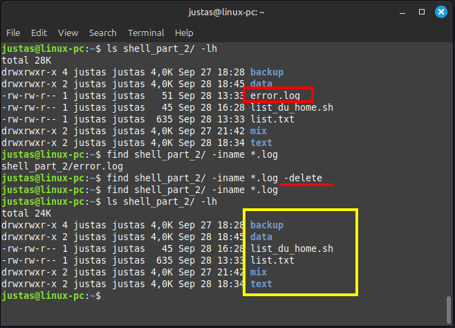
find komanda jau yra labai galinga, bet dar nežinai jos stipriausios pusės! Su find gali perduoti rastus failus tolesniam apdorojimui. Tiesa, tai neveikia taip, kaip su pipe |. Sintaksė yra tokia:
find ... -exec <komanda> {} \;-execnurodo, kad su tuo, ką radai, dabar vykdysi kitą komandą.<komanda>gali būti bet kuri, tik turi būti tinkama pasirinktiems failams.{}naudojama vietoj failų pavadinimo.- Kad baigi komandą, nurodai su
\;.
Įsivaizduok, kad nori atspausdinti visas eilutes, kuriose yra žodis “apie”. Bet nepameni, kuriame būtent faile, tik žinai, kad tas failas buvo .txt formato.
find ~ -type f -iname "*.txt" -exec grep -iH "apie" {} \;- taigi
findsuranda visus tekstinius failus, tiklsiau tuos failus, kurių pavadinimas baigiasi .txt -execperleidžia juosgrepkomandai- grep ieško case insensitive
-ibet kartu ir atspasdina failo, kuriam priklauso rasti eilutė adresą-H
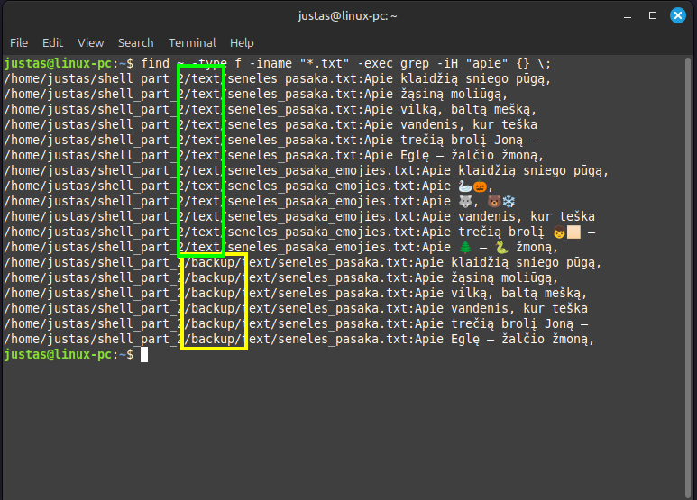
Taip, galima perduoti rastus failus ir kitoms komandoms, pvz., rm, cp, mv.
Kaip matai, perduoti failus -exec gali būti pavojinga. Alternatyva, kur tavęs prašys patvirtinti kiekvienam failui taikomą komandą, yra -ok. Štai komanda, kuri suras visus failus, kurių pavadinime yra .csv ir padarys jų kopiją į aplanką ~/copy.
mkdir ~/copy
find ~ -iname "*.csv" -ok cp {} ~/copy/ \;Kaip matai, prieš kiekvieną operaciją, terminalas reikalauja patvirtinimo, kurį turi įrašyti kaip y arba yes, kad patvritinti. Įrašius n, no , arba tiesiog paspaudus Enter, tai atitiks no ir komanda tam failui nebus įvykdyta.
Vykdant šią operaciją, find rado tuos pačius failus dar kartą, ten, kur jie jau buvo nukopijuoti, t.y., pačioje copy direktorijoje. Kad išvengtum to, gali find nurodyti, kur neieškoti su -not -path "/home/justas/copy/*" arba ! -path "/home/justas/copy/*". Atkreipk dėmesį į tai, kad nurodant -not -path, reikia absoliutaus adreso ir *, kad ten rasti failai (jų adresai) nebūtų įtraukti.
- Parašyk komandą, kuri ieško visų failų tavo namų direktorijoje, kurių pavadinimas baigiasi .csv arba .txt.
- Tą pačią komandą, tik perduok rezultatus į
grep, atspausdink tas eilutes, kuriose yra “2024”. - Surask visus failus, kurių sukūrimo data yra daugiau nei prieš 14 dienų, kurių pavadinimas baigiasi .mp4, ir kurie yra dwhelper arba Downloads direktorijose bei kurių dydis yra didesnis nei 100M.
- Tą pačią komandą, tik panaudok -ok su rm {}. Dabar komanda perklaus, ar trinti kiekvieną failą. Ši komanda turėtų padėti tau apsivalyti įvairius senus video.
Kaip matai, galima ieškoti ir pagal failo savininką, jo grupę, ar failo teises.
| Opcija | Reikšmė |
|---|---|
-name |
Ieškoti pagal failo pavadinimą, jautrus raidžių dydžiui. |
-iname |
Ieškoti pagal failo pavadinimą, nejautrus raidžių dydžiui. |
-type |
Ieškoti pagal failo tipą (f - failas, d - direktorija, l - nuoroda). |
-size |
Ieškoti pagal failo dydį (+ didesnis, - mažesnis, be ženklo - lygus). |
-ctime |
Ieškoti pagal sukūrimo datą (dienomis). |
-mtime |
Ieškoti pagal modifikavimo datą (dienomis). |
-atime |
Ieškoti pagal prieigos datą (dienomis). |
-maxdepth |
Nustatyti maksimalų paieškos gylį (nuo pradinės direktorijos). |
-mindepth |
Nustatyti minimalų paieškos gylį (nuo pradinės direktorijos). |
-ls |
Išvesti papildomą informaciją apie rastus failus. |
-not -path |
Neįtraukti nurodyto kelio į paiešką. |
-and/-a |
Loginis operatorius “ir” (and). |
-or/-o |
Loginis operatorius “arba” (or). |
! |
Loginis operatorius “ne” (not). |
-user |
Ieškoti pagal failo savininką. |
-group |
Ieškoti pagal failo grupę. |
-perm |
Ieškoti pagal failų teises (permisijas). |
7.6.2 locate
Linux operacinė sistema turi mechanizmą, kuris reguliariai indeksuoja visus failus, todėl locate <pavadinimas> komanda leidžia labai greitai surasti failą, kurio pavadinimą žinai. Galima naudoti pakaitos simbolius (wildcards) *, kad paieška apimtų įvairias pavadinimo variacijas.
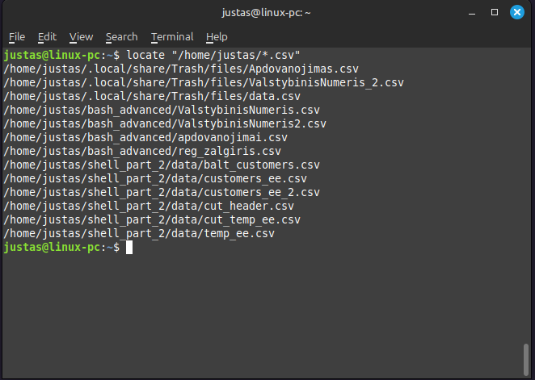
Keli locate trūkumai:
- Neatnaujintų failų rodymas:
locatenerodo neseniai sukurtų arba pervadintų failų, kol nėra atnaujinama failų duomenų bazė. Duomenų bazės atnaujinimui naudok komandąupdatedb. - Paieškos kriterijų trūkumas:
locatenesuteikia galimybės naudoti paieškos kriterijų, tokių kaip failo dydis, amžius ir kt., kuriuos siūlo find.
7.6.3 whereis
Komandos whereis paskirtis yra rasti informaciją apie programas, įskaitant jų vykdomuosius failus (binary files), dokumentaciją (pavyzdžiui, man puslapius) ir, jei įmanoma, šaltinio kodą (source code). Ji naudinga, kai nori sužinoti, kur yra įdiegta programa ir kokie susiję failai yra tavo sistemoje.
- Vykdomieji failai: whereis parodo kelią iki programų vykdomųjų failų.
- Dokumentacija: Parodo, kur yra susiję dokumentacijos failai, tokie kaip man puslapiai.
- Šaltinio failai: Jei yra, parodo kelią iki programos šaltinio failų.
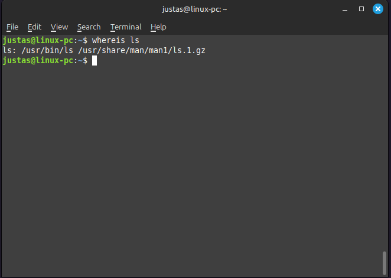
7.6.4 which
Komanda which rodo, kurioje iš tavo aplinkos kintamajame PATH nurodytų vietų yra pirmasis rastas vykdomasis failas. Įvedus komandos pavadinimą terminale, which pateikia pirmą rastą failo kelią:
- Pateikia tik pirmą rastą vykdomąjį failą nurodytame PATH.
- Naudinga patikrinti, ar programa, pvz., „Python“, yra įdiegta ir kuri versija bus vykdoma.
Jei reikia sužinoti visas vietas, kur yra vykdomasis failas ir susiję failai (pvz., kelios „Python“ versijos), verčiau naudoti whereis, nes jis pateikia išsamesnę informaciją.
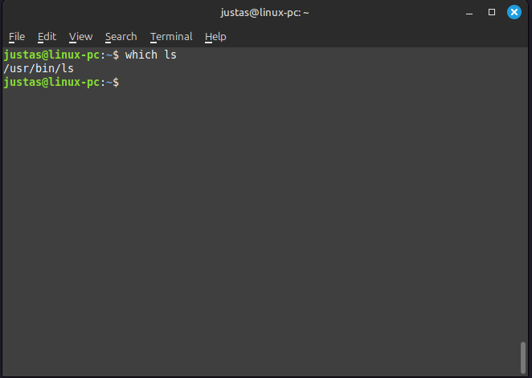
7.6.5 Intarpas: Kas yra PATH?
Ši tema gali pasirodyti šiek tiek sudėtingesnė, bet ją pravartu žinoti norint geriau suprasti, kaip veikia Linux komandinė eilutė (CLI).
Kai tu įvedi komandą, pvz., ls, kaip Shell žino, kokią programą paleisti? Shell negali peržiūrėti visų tavo failų ieškodama programos ls - tai būtų neefektyvu ir užtruktų labai ilgai. Vietoje to, Bash naudoja aplinkos kintamąjį, vadinamą PATH, kuris yra saugomas visų direktorijų sąrašas, kurias Bash tikrina ieškodama vykdomųjų programų.
Kai tu įvedi ls, Bash tikrina šias direktorijas pagal eiliškumą:
/usr/local/sbin
/usr/local/bin
/usr/sbin
/usr/bin
/sbin
/bin
/usr/games
/usr/local/games
/snap/binŠis tikrinimo procesas vyksta taip: jei programa nerandama pirmojoje direktorijoje, tikrinama kita iš eilės, kol galiausiai programa randama. Jei programa nerandama visame PATH sąraše, terminalas išveda pranešimą, kuris gali siūlyti šią programą įdiegti.
Retais atvejais tau gali reikėti pridėti naujų direktorijų prie PATH kintamojo, tačiau tai yra pažangesnė tema, ir pradedančiajam Linux naudotojui dažniausiai to nereikės. Dabar žinai, kaip Bash naudoja PATH norėdama greitai surasti ir paleisti programas.
Nori sužinoti kaip atrodo tavo PATH? Pabandyk:
echo $PATH7.7 Failo teisių valdymas
Ankstesniame skyriuje tu jau susipažinai su tuo, kad kiekvienas failas ir direktorija turi nustatytą savininką. Taip pat nurodomos savininko, jo grupės ir kitų vartotojų teisės. Šiame skyriuje išmoksi, kaip keisti šias teises ir atlikti kitus su failų savininkais susijusius veiksmus.
7.7.1 Failo Teisių Struktūra
Failų teises galima pamatyti, naudojant ls -l komandą, kuri išveda informaciją apie failus, įskaitant jų teises:
drwxrwxr-x 4 justas justas 4096 Sep 27 18:28 backup
drwxrwxr-x 2 justas justas 4096 Sep 28 18:45 data
-rw-rw-r-- 1 justas justas 45 Sep 28 16:28 list_du_home.sh
-rw-rw-r-- 1 justas justas 635 Sep 28 13:33 list.txt
drwxrwxr-x 2 justas justas 4096 Sep 27 21:42 mix
drwxrwxr-x 2 justas justas 4096 Sep 28 18:34 textKiekviena eilutė parodo failo teises:
r- skaitymo teisėw- rašymo teisėx- vykdymo teisė-- nėra teisių
Pirmoji tripleto grupė priklauso savininkui, antroji - grupei, trečioji - kitiems vartotojams. Suprantama pirmas ženklas (d, -, l) indikuoja ar tai direktorija, failas ar nuoroda.
7.7.2 Keisti Failo Teises su chmod
chmod komanda leidžia keisti failo teises. Naudojami du būdai - skaitmeninis ir simbolinis.
Skaitmeninis Būdas
Kiekvienai teisei priskiriama skaitinė reikšmė:
4- skaityti (read)2- rašyti (write)1- vykdyti (execute)0- jokių teisių (-)
Norint nustatyti teises, skaičiuoji reikšmes, pvz:
- Vartotojui (user): skaityti, rašyti, vykdyti (4+2+1 = 7)
- Grupei (group): skaityti, vykdyti (4+0+1 = 5)
- Kitiems: skaityti (4+0+0 = 4)
Pavyzdys, kaip nustatyti teises su chmod:
chmod 754 failas.txtŠios komandos rezultatas - user gali skaityti, rašyti, vykdyti; grupė gali tik skaityti ir vykdyti, o kiti tik skaityti.
Simbolinis Būdas
Simboliniame būde naudoji raides ir simbolius:
u: savininkas (user)g: grupė (group)o: kiti (others)a: visi (all)+: pridėti teisę-: pašalinti teisę=: nustatyti tikslias teises
Ši komanda prideda vykdymo teisę savininkui.
chmod u+x failas.txt7.7.3 Keisti Savininką su chown ir Grupę su chgrp
Nors dažniausiai šių komandų nereikia naudoti, mokėti jomis naudotis gali būti naudinga:
chown <user> <file>- keičia failo savininką.chgrp <group> <file>- keičia failo grupę.chown <user>:<group> <file>- keičia tiek savininką, tiek grupę.chown -R <user>:<group> <directory>- keičia visų failų nurodytoje direktorijoje savininką ir grupę rekursyviai.
Svarbu: Jei keiti sisteminių failų savininką ar grupę, gali prireikti administratoriaus teisių (sudo).
7.7.4 Kada Reikia Keisti Teises?
Yra kelios situacijos, kai gali reikėti keisti failo teises:
Skriptų Paleidimas
Jei sukuri skriptą, pavyzdžiui, senu_video_valymas.sh, ir nori jį paleisti, gali reikėti suteikti sau vykdymo teisės:
chmod 744 senu_video_valymas.sheetFailas tapęs skriptu pakeičia spalvą į žalią.
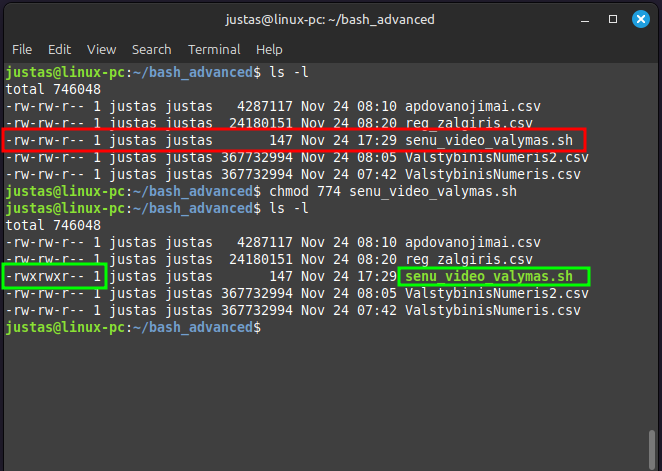
AppImage Programų Paleidimas
AppImage yra programa, patalpinta viename faile. Parsisiuntus AppImage gali pamatyti, kad jis neturi vykdymo teisių.
Nors tu tiktėtina jau turi Freetube, nueik į https://freetubeapp.io/#download ir paspausk ant AppImage, kad jį atsisiųsti.
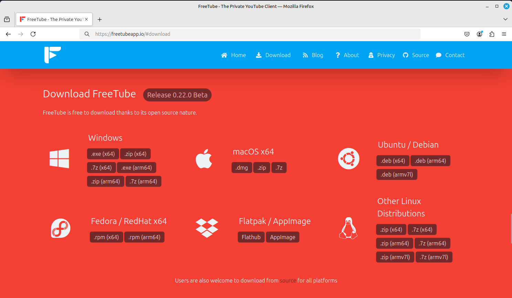
kaip matai, failas neturi executbale teisių.
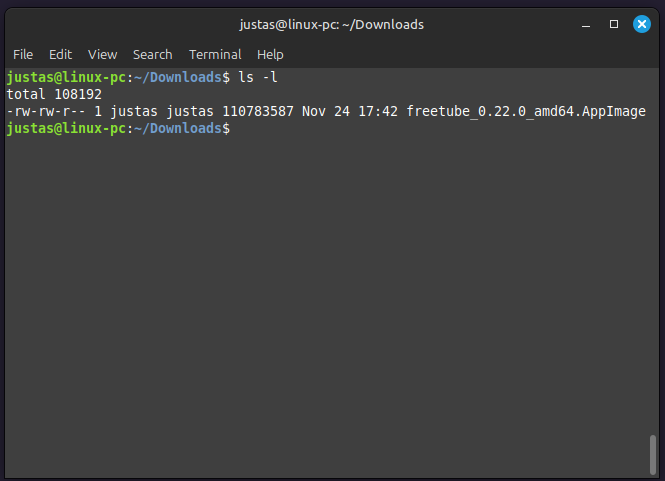.
Norint paleisti failą, reiktų susirasti failą per failų naršyklę, o tada pasirenkant “Properties” > “Permissions” ir pažymėti “Allow executing file as program”.
Arba sutieki tokias pat teises su chmod naudojant terminalą:
chmod 774 freetube_0.22.0_amd64.AppImage7.8 Procesų Valdymas
Norint efektyviai valdyti kompiuterio išteklius, svarbu suprasti, kokie procesai veikia tavo sistemoje. Tai ypač svarbu sistemų administravime ir duomenų analitikoje. Šiame skyriuje susipažinsi su pagrindinėmis komandomis, kurios padės tau stebėti veikiančius procesus ir identifikuoti galimas problemas.
7.8.1 ps - Procesų Sąrašas
ps komanda leidžia pamatyti veikiančių procesų sąrašą statiniu vaizdu. Tai reiškia, kad ji parodo procesų būseną tam tikru momentu. Ši komanda ypač naudinga, kai reikia sužinoti, kas vyksta tavo sistemoje, arba rasti konkretaus proceso informaciją. Pagrindinės ps subkomandos:
a: Parodo visus procesus su terminalais.u: Parodo procesus su vartotojo lygio informacija.x: Parodo procesus, neprisirišusius prie terminalo.
Ką Parodo ps Išvestis?
- USER: Kas paleido procesą (pvz., justas, root).
- PID: Proceso identifikatorius - unikalus skaičius, skirtas kiekvienam procesui.
- %CPU: Kiek procesoriaus resursų naudoja procesas.
- %MEM: Kiek RAM atminties naudoja procesas.
- COMMAND: Proceso paleidimo komanda (pvz., python analysis.py).
7.8.1.1 Tipiniai Scenarijai
Ieškoti Konkretaus Proceso
Jei dirbi su dideliu Python skriptu, kuris užstringa, ir tau reikia jį sustabdyti:
ps aux | grep pythonŠi komanda parodys visus procesus, susijusius su python. Suradus proceso PID, jį gali sustabdyti su komanda kill:
kill <PID>7.8.2 kill komanda
kill komanda naudojama procesui sustabdyti arba nutraukti siunčiant jam signalą. Signalai yra mechanizmas, leidžiantis programuotojams siųsti instrukcijas procesams apie tai, kaip elgtis. Signalai gali būti siunčiami įvairiais būdais, siekiant subtiliai sustabdyti procesą arba jį prievarta nutraukti.
Pagrindinė sintaksė:
kill [option] <PID>, kuryra proceso identifikatorius. Signalai: Kiekvienas signalas turi numerį ir pavadinimą.Dažniausiai naudojami signalai yra:
SIGTERM (15): Mandagus proceso prašymas nutraukti darbą. Procesui suteikiama galimybė uždaryti atviras bylas ir atlikti kitus būtinus uždarymo veiksmus.
kill -15 <PID>
SIGKILL (9): Prievartinis proceso nutraukimas be galimybės atlikti uždarymo veiksmus. Procesas sustabdomas iš karto.
kill -9 <PID>
Rūšiuoti Pagal Procesoriaus Naudojimą
Jei kompiuteris veikia lėtai, gali išsiaiškinti, kuris procesas labiausiai apkrauna CPU:
ps aux --sort=-%cpu | headAtminties Naudojimo Analizė
Jei RAM greitai užsipildo analizuojant didelius duomenis:
ps aux --sort=-%mem | head7.8.3 top
Komanda top parodo visus aktyvius procesus dinaminėje aplinkoje, pateikiant bazinę sistemos informaciją. top yra įdiegta beveik visuose Linux distribucijose, tačiau jos sąsaja nėra itin vizualiai patraukli.
7.8.4 htop
htop yra interaktyvus įrankis, skirtas stebėti procesus realiu laiku. Jis suteikia spalvotą, aiškią sąsają, leidžiančią filtruoti, rūšiuoti ir valdyti procesus tiesiogiai.
Pagrindinės Funkcijos
- Paleidimas: Įvesk
htopterminale. - Rodo procesus pagal resursų naudojimą: Leidžia matyti, kurie procesai suvartoja daugiausiai resursų.
- Leidžia sustabdyti procesus: Gali nutraukti procesus neišeidamas iš sąsajos.
- Dinamiškai atnaujina informaciją.
Valdymas htop Viduje
- Rodyklių Klavišai: Naršymui tarp procesų.
- F3: Ieškoti proceso pagal pavadinimą (pvz., python).
- F9: Užbaigti pasirinktą procesą (kill).
- F10: Išeiti iš htop.
Tipiniai Scenarijai:
Surasti Procesą, Kuris Apkrauna CPU
Dirbant su dideliais duomenų failais, htop padeda pamatyti, ar tavo skriptas naudoja per daug CPU. Ieškok proceso, rūšiuok paspaudžiant p.
Valdyti Strigusį Procesą
Jei R arba Python procesas užstringa, rask jį naudojant htop, pasirink rodyklėmis ir paspausk F9.
Atminties Stebėjimas Realiu Laiku
Vykdant sudėtingus skaičiavimus (pvz., mokant mašininio mokymosi modelį), stebėti atminties naudojimą. Jei procesas per daug apkrauna sistemą, gali jį sustabdyti.
Šios komandos suteikia reikalingus įrankius efektyviai valdyti procesus, stebėti išteklių naudojimą ir spręsti problemas, susijusias su kompiuterių našumu.
- Surastk ir nutrauk procesą su
ps auxirkill- Paleisk procesą miegoti:
sleep 600. Ši komanda leis terminalui “miegoti” 600 sekundžių. - Atidaryk kitą terminalo langą ir surask šį procesą, naudojant
ps aux | grep sleep. Tada nusiųskkill -9 <PID>, kuryra proceso ID, kurį rasi prieš tai atliktoje komandoje. - Pasitikrink ar proceso nebėra.
- Paleisk procesą miegoti:
- Surastk ir nutrauk procesą su
htop- Paleisk procesą miegoti:
sleep 600. - Paleisk
htopterminalo kitame lange. Surasksleepprocesą sąraše. - Naudojant rodyklių klavišus pasirink procesą ir nutrauk jį paspausdus
F9, tada pasirink9(SIGKILL), kad prievarta nutrauktum procesą. - Pasitikrink ar proceso nebėra.
- Paleisk procesą miegoti:
7.9 nano Tekstinio Redaktoriaus Naudojimas
nano yra patogus teksto redaktorius, skirtas tiek pradedantiesiems, tiek pažengusiems Linux naudotojams.
- Atidaryti esamą arba sukurti naują failą:
nano <failas>Jei failas egzistuoja, jis bus atidarytas redagavimui. Jei failo nėra, jį išsaugant bus sukurtas naujas failas.
- Redaguoti sisteminius failus su administracinėmis teisėmis:
sudo nano <failas>`Jeigu paleisi nano be failo, jis sukurs naują buferį. Gali pradėti rašyti tekstą iš karto. Naudok rodyklių klavišus, kad judėtum tekste.Išsaugant, bus sukurtas failas tuo pavadinimu, kurį nurodysi.
Keli naudingi flagai:
- Rodyti žymeklio padėtį
nano -c <failas> - Kurti atsarginę kopiją prieš išsaugant:
nano -B <failas> - Įjungti pelės palaikymą:
nano -m <failas> - Rodyti eilutes:
nano -l <failas>
Pagrindinės Redagavimo Komandos
- Išsaugoti ir Uždaryti
- Išsaugoti pakeitimus:
Ctrl + O(paspausk Enter, kad patvirtintum). - Išeiti iš nano:
Ctrl + X.
- Išsaugoti pakeitimus:
- Teksto Redagavimas
- Ieškoti teksto:
Ctrl + W. - Iškirpti teksto eilutę:
Ctrl + K. - Įklijuoti iškirptą tekstą:
Ctrl + U.
- Ieškoti teksto:
- Navigacija
- Pereiti į eilutės pradžią:
Ctrl + A. - Pereiti į eilutės pabaigą:
Ctrl + E. - Slinkti aukštyn:
Ctrl + Y. - Slinkti žemyn:
Ctrl + V.
- Pereiti į eilutės pradžią:
7.9.1 Praktikos Uždaviniai su nano
Sukurti ir Redaguoti Tekstinį Failą
- Sukurk ir atidaryk failą mano_uzrasai.txt:
- Įrašyk tekstą: “Sveiki atvykę į Linux mokymus!”, išsaugok su
Ctrl + O, ir išeik suCtrl + X. - Vėl atidaryk failą, pridėk tekstą: “Šiandien mokysimės nano redaktoriaus.”, išsaugok ir išeik.
- Atspausdink failo turinį su
cat
Redaguoti Esamą Failą su Administratoriaus Teisėmis
- Atidaryk
/etc/hostssusudo: - Pridėk komentarą “# Redagavimas tekste” viršuje, išsaugok ir išeik.
- Atspausdink failo turinį su
cat(jokio redagavimo, tadsudonereikia): - Vėl atidaryk failą su
sudoir ištrink įrašytą komentarą, išsaugok ir išeik:
- Atidaryk
7.10 Alias
Užbaikime šį skyrių pasitelkę nedidelį “programavimą”. Nors tai dar nėra pilnai skriptų rašymas, tačiau toks metodas padės palengvinti kasdienį darbą terminale, sukuriant trumpinius dažnai naudojamoms komandoms. Trumpniai vadinamai alias.
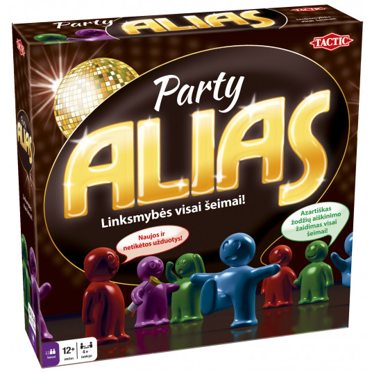
Tu išmokai ieškoti didelių video failų ir tavo komanda atrodė taip:
find ~/Downloads/ ~/dwhelper/ -type f -iname "*.mp4" -size +100M -atime +14Jei tau reikėtų šią komandą įrašyti kaskart, tai užimtų daug laiko. Nors automatinis skriptų paleidimas, pvz., kompiuterio įjungimo metu, yra sprendimas, tačiau paprastesnis būdas yra sukurti alias - tai leidžia greitai paleisti ilgas komandas, naudojant trumpinius.
Alias Apibrėžimas
Norint sukurti alias, turi redaguoti savo namų direktorijoje esantį .bashrc failą. Štai kaip tai padaryti:
- Atidaryk .bashrc failą:
nano ~/.bashrc - Failo pabaigoje pridėk naują alias naudojant šią sintaksę:
alias alias_name='command'Pavyzdžiui, sukurk alias komandai, kuri ieško didelių video failų:
alias lnuf='find ~/Downloads/ ~/dwhelper/ -type f -iname "*.mp4" -size +100M -atime +14'- Išsaugok ir išeik iš redaktoriaus (naudok Ctrl + O, Enter, Ctrl + X).
Alias Paleidimas
Jei dabar terminale įrašysi lnuf, gali pastebėti, kad terminalas nesupranta šios komandos. Taip yra todėl, kad .bashrc failo pakeitimai dar nėra užkrauti į aktyvią terminalo sesiją. Štai ką padaryk:
- Atnaujink Bash Shell nustatymus: Naudok
sourcekomandą, kad iš naujo užkrautum .bashrc nustatymus, neperkraunant visos terminalo programos.
source ~/.bashrcDabar tu gali tiesiog naudoti komandą lnuf, kad paleistum visą ilgąją komandą.
Alias leidžia greitai ir efektyviai valdyti kasdieninių užduočių komandas, sutaupant laiko ir pastangų. Tai nedidelis, bet labai naudingas “programavimo” elementas, kurį gali pritaikyti įvairiose situacijose, norint optimizuoti savo darbo eigą terminale.
Jeigu pastebėsi, kad tam tikro alias nebereikia - visada gali jį ištrinti ir atnaujinus perkrauk bash panaudojant source ~/.bashrc
7.11 Projektai
7.11.1 Projektas 1: Orų prognozė Terminal lange
Sveikinu tapus junior software developer’e nedidelėje kompanijoje, kuri specializuojasi kurdama bash skriptus Linux vartotojams. Paprastai tokia kompanija dirba su įvairiais projektais, kuriuose reikia kūrybingumo ir techninių įgūdžių.
Tavo komandos produkto vadovas (product manager - PM) pasidalino pastebėjimu:
„Mūsų klientai dažnai peršąla, nes išeina nepažiūrėję, kokia temperatūra lauke. Jie taip įnykę į savo terminalus, kad aplinkinio pasaulio nemato.“
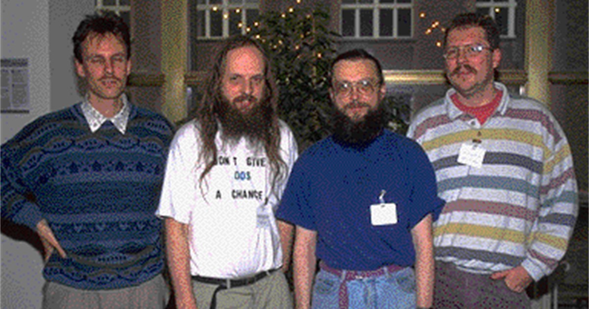
“Ar galėtum sukurti programą, kuri terminale rodytų artimiausių 12 valandų orų prognozę?“.
PM’as tau pateikė idėjų eskizą, o tavo užduotis - sukurti pirmąją programos versiją, vadinamą MVP (Minimum Viable Product). Kaip dažnai nutinka programuotojų darbe, pagrindinė tavo užduotis yra paversti idėjas į veikiančius sprendimus, naudojant technologijas ir kūrybingumą.
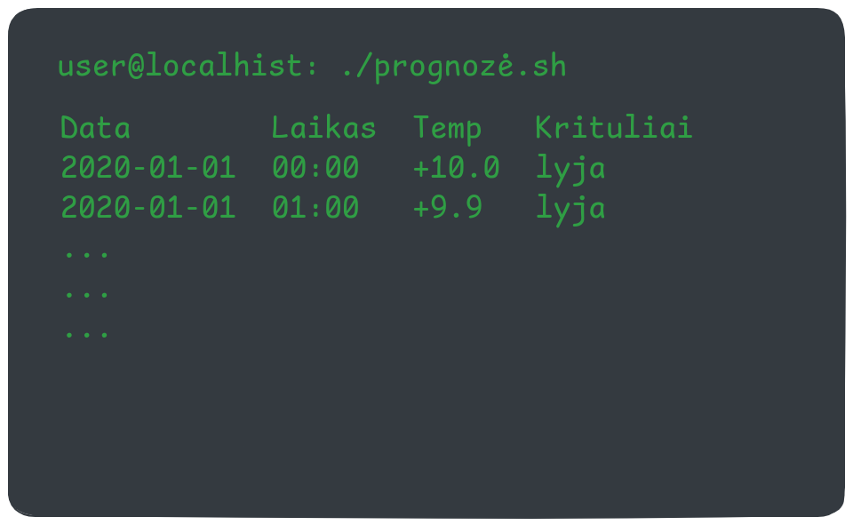
Projekto Pradžia
Pradėk nuo projekto aplanko sukūrimo, kad galėtum patogiai struktūrizuoti savo darbą. Tai padės išlaikyti tvarką, kadangi, kaip žinome, programuotojai linkę eksperimentuoti ir generuoti daugybę tarpinio kodo.
Keliauk į Lietuvos hidrometeorologijos tarnybos svetainę (https://www.meteo.lt/), kur gali rasti API dokumentaciją. Pirmiausia, sukurk užklausą, kuri atsiųs visas galimas vietoves. Atsispausdink pirmąją vietovę, kad suprastum, kaip yra struktūrizuoti duomenys. Tai yra svarbus žingsnis, kai dirbi su naujais duomenimis arba API - suprasti jų struktūrą ir galimybes.
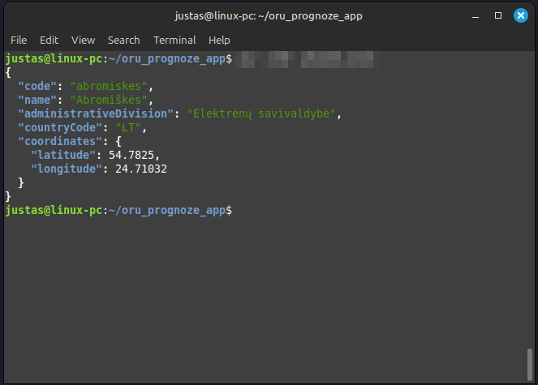
Duomenų Apdorojimas
Kadangi tave domina tik Lietuvos vietovės, reikės filtruoti duomenis. Naudok JSON apdorojimo įrankius, kaip jq, susiaurink duomenų masyvą tik į Lietuvą ir išsaugok rezultatus kaip TSV failą su vietovių pavadinimais bei kodais, pavadintą lt_places.tsv. Kiek iš viso yra vietovių, kurių pavadinimas prasideda „Viln“? Suradus atsakymą, nusprendei savo MVP naudoti Vilniaus rajoną Lazdynus. Sužinok, koks yra šios vietovės kodas, nes jis bus būtinas tolimesniam darbui su API.
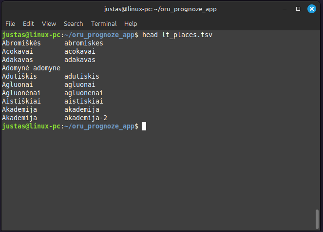
Orų Prognozės Gavimo Procesas
Grįžk prie API dokumentacijos ir sužinok, kaip parašyti užklausą orų prognozei gauti. Parsisiųsk duomenis ir išsaugok juos kaip data_forecast.json. Naudojant JSON apdorojimo įrankius, atspausdink prognozę gražiu JSON formatu ir pasirink tinkamą masyvą bei submasyvus, kurie pateiks reikalingą informaciją apie orą. Išrink šiuos elementus: .forecastTimeUtc, .airTemperature, .conditionCode, ir suformatuok juos kaip CSV failą, pavadindamu filtered_data_forecast.csv.
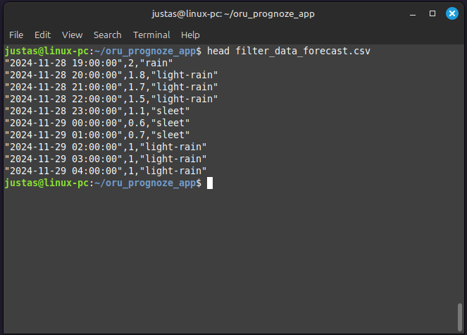
Estetiniai Pataisymai
Kad galutinis produktas būtų vizualiai patrauklus, naudok įrankius kaip column išlyginimui. Jei dar nežinai šios komandos - gali pasinaudoti ChatGPT ar kitais šaltiniais, kad sužinotum, kaip ji veikia. Tavo pristatomas failas vadinsis final_output.
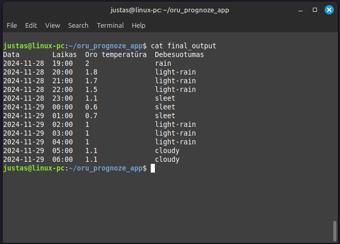
PM pamatęs tavo MVP, tiesiog negalėjo sulaikyti džiaugsmo:
Jis paprašė pakeisti terminą „Debesuotumas“ į „Oro sąlygos“ ir pridėti emodžius, kad išvestis būtų žaismingesnė. Tu nusprendei grįžti į API puslapį ieškoti visų galimų orų sąlygų ir paprašyti ChatGPT sukurti sed komandas, kurios pakeis orų sąlygas emodžiais. Galiausiai, produktą pristatei vadovui:
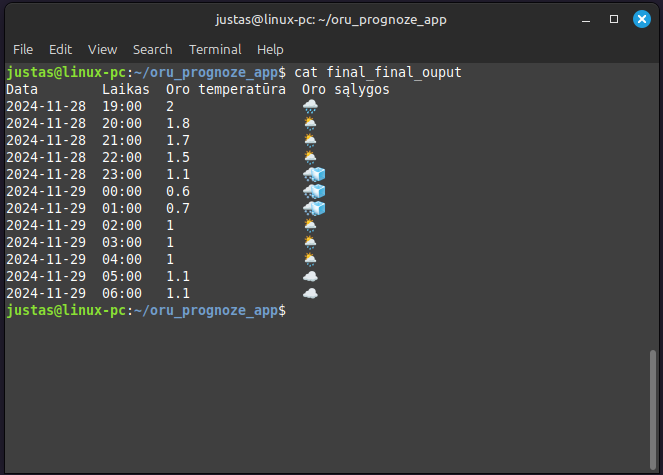
Ir PM’as buvo sužavėtas:
Dabar tau beliko sudėti visas komandas į vieną skriptą, kuris veiktų tik atmintyje, nesukuriant fizinių failų. Stenkis jungti kuo daugiau su pipes |. Gali būti kad su kokiu sublime-text editoriumi taudirbti būtų papraščiau. Nors ne terminalo lange, o papildoma programa, bet ji palengvins darbą.
Išsaugok skriptą kaip lazdynai_temp.sh, patikrink failo teises, suteik vykdymo leidimą ir paleisk skriptą, kad įsitikintum, ar jis generuoja atitinkamą prognozę.
Skriptą paleisti gali su ./lazdynai_temp.sh
Tai yra ne tik naudinga programa, bet ir puikus pavyzdys, kaip kūrybingas programuotojas gali prisidėti prie kasdienio gyvenimo patogumo!
Skyriuose apie bash skriptų rašymą išmoksi naudotis bash logika, užduoti klausimus vartotojams ir pritaikyti šio skripto logiką priklausomai nuo gautų atsakymų.
p.S. metei.lt tinklpayje prie API dokumentacijos yra aprašyta licenzija. Kokia ji būtent? Susipažink su CC licenzijomis https://creativecommons.org/. Ir atsakyk į šiuos klausimus:
- ar tavo įmonė gali naudoti šiuos duomenis kuriant komercinius produktus?
- ar sukūrus produktą, tu turi nurodyti, kas yra duomenų šalintinis?
- ar tu gali pakeisti licenciją į kitokią? ką tai reiškia šiam produktui?
7.11.2 Projektas 2 Šeškinės poliklinos radiologiniai tyrimai
Buvo gražus rytas, kai Šeškinės poliklinikos CTO, Ruprechtas, sukruto spręsti svarbių klausimų. Poliklinika buvo užimta kaip niekada, o radiologinių tyrimų kiekis augo kasdien. Ruprechtas žinojo, kad norint užtikrinti sklandų poliklinikos darbą, reikia rasti būdą, kaip efektyviai stebėti ir analizuoti šiuos tyrimus. Tad kreipėsi į “Linux consulting UAB” pagalbos.
Justina,produktų vadovė (PM) turėjo viziją, kaip automatizuoti kasdienines ataskaitas, ir nedelsiant susitiko su tavimi suderinti darbo eigos.
„Klausyk, mums reikia, kad kasdien būtų pateikiama ataskaita apie atliktus tyrimus pagal kūno dalis,“ - sako Justina, tvirtai traukdama tave į projektą. „Reikia panaudoti duomenis iš data.gov.lt. Galėsi tai padaryti?“
Tu žvilgtelėjai į pateiktą informaciją ir iš karto susidėliojai galvoje planą.
„Taip, Justina, aš tuo pasirūpinsiu. Bus įdomus projektas.“
Pasiruošei kibti į darbus, žinant, kad šis projektas padės poliklinikai ne tik optimizuoti kasdienius procesus, bet ir pagerinti ligonių priežiūrą. Be to šis projektas - puiki galimybė parodyti savo sugebėjimus ir prisidėti prie Ruprecht’o naujovių poliklinikoje.
- Duomenų šaltinis: data.gov.lt
- Duomenų struktūra:
| Kodas | Reikšmė | Formatas |
|---|---|---|
| vda_id | Valstybės Duomenų Agentūros įrašo identifikatorius | string |
| paciento_asm_k | Nuasmenintas paciento asmens kodas | string |
| tyrimo_studijos_uuid | Tyrimo studijos identifikatorius | string |
| tyrimo_studijos_data | Tyrimo studijos data | date (ref: D) |
| paciento_gimimo_metai | Paciento gimimo metai | date (ref: Y) |
| paciento_lytis | Paciento lytis | string |
| paciento_svoris | Paciento kūno svoris kilogramais | number (ref: kg) |
| paciento_ugis | Paciento ūgis metrais | number (ref: m) |
| tyrimo_serijos_uuid | Tyrimo serijos identifikatorius | string |
| tirta_kuno_dalis | Tirta kūno dalis | string |
| tyrimo_serijos_modalumas | Tyrimo serijos modalumas | string |
| tyrimo_serijos_aprasymas | Tyrimo serijos aprašymas | string |
| atvaizdo_uuid | Atvaizdo unikalus identifikatorius | string |
| apsvita | Apšvita arksekundėmis | number (ref: ″) |
| spinduliuote | Spinduliuotė decigrėjais kvadratiniame centimetre | number (ref: dGy/cm²) |
| fotometrine_interpretacija | Fotometrinė interpretacija | string |
- Tiskslas: Galėti kasdien Terminale gauti naujausius duomenis apie altiktų radiologinių tyrimų skaičių pagal kūno vietos.
Sprendimo gairės
Šie klausimai ir žingsniai padės tau sėkmingai atlikti užduotį. Nepamiršk, kad tai tik orientyrai, tad skirk laiko ir savarankiškai gilinkis į temą.
Gilinkis į data.gov.lt
- API pasirinkimai:
- Eik į API puslapį ir ištyrinėk
getall,getone,changes. - Suprask, kaip kiekvienas variantas keičia JSON struktūrą. Apmastyk, ką jie kiekvienas reiškia tau ir ar ir kaip gali būti pritaikomi tavo projekte.
- Eik į API puslapį ir ištyrinėk
- Duomenų Filtravimas:
- Eik į „Duomenys“ lapą ir panaudok filtrą (select(*)).
- Pasirink keletą tau reikalingų stulpelių ir pažiūrėk, kaip tai paveikia užklausas
- Patikrink, kaip pasikeičia URL struktūra, kai pasirenki konkretų filtrą.
- Duomenų tyrinėjimas ir analizė:
- Naudok galimybę rūšiuoti ir filtruoti lentelės duomenis „Duomenys“ lape
- Atsakyk sau į šiuos klausimus:
- Kokia yra seniausia ir naujausia tyrimų data?
- Ar yra tuščių reikšmių?
- Ar yra skirtumas parsiuntimo greityje, priklausomai nuo mano padarytų pasirinkimų?
- Užbaigus filtravimą, grįžk į API lapą ir analizuok, kaip keitėsi užklausa.
- Naudok tekstinį redaktorių pvz. Sublime, kad galėtum geriau pamatyti URL tvarką ir surpasti sistemą.
Programavimo etapas
- Sukurk projekto direktoriją
- Sukurk README.md failą, kuriame aprašyk projekto informaciją ir tikslus.
- Sukurk skriptą
recent_radiological_seskines_pol.sh:- Skriptas turi atsisiųsti duomenis JSON formatu.
- Pasirinkti reikalingus stulpelius: Tyrimo studijos data ir Tirta kūno dalis
- Filtruoti duomenis pagal nustatytą datą, pvz., 2024-11-28. arba datos intervalą
- Suskaičiuoti tyrimų skaičių pagal kūno dalis.
- Suplokštinti duomenis į TSV formatą.
Pastaba: Kol dirbi su sintakse ir lygiavimu, sukurk laikinus failus, kad galėtum pamatyti, kur yra tabai ar tarpai. Tai padės teisingai supaprastinti duomenų apdorojimą ir išvengti klaidų. Vėliau tuos failus ištrinsi.
MVP vertinimas
Dienos pabaigoje, kai PM Justina grįžta, tu su nerimu ir pasididžiavimu parodai savo atliktą darbą. Justina, garsėjanti savo atidumu detalėms ir griežtumu, kritiškai apžvelgia rodmenis. Laikui bėgant, jos veide atsiranda šypsena.
„Puiku, man labai patinka, ką padarei“, - pagiria ji, nuleisdamažiūrėjusi į tavo kruopščiai parengtą rezultatą. „Tačiau, žinodama Ruprechtą, norėčiau, kad galėtume į projektą įtraukti daugiau aiškumo ir paprastumo. Gal gali parengti:
- Išsami README.md failo versiją: Aprašyk jame kiekvieną projekto dalį - nuo duomenų gavimo iki galutinio rezultato pateikimo. Būtų puiku, jei įtrauktum ir pastebėtas prielaidas bei pasiūlymus tobulinimui.
- Vienos eilutės komandą (Oneliner): Tokio tipo komanda turėtų tiesiog terminale pateikti vienos pasirinktos dienos rezultatus, kad mūsų techninis personalas galėtų greitai ir patogiai gauti reikiamą informaciją.
- Pilną skriptą: Jis turėtų būti išsamus, kad galėtų išgauti ir išfiltruoti duomenis už tam tikrą laikotarpį ir išsaugoti juos formatu, tinkamu atidaryti su libreoffice. Tai leis mūsų komandai lengvai tvarkytis su duomenimis ir rengti ataskaitas.“
Pratęsimas
Pamąstyk, kaip iš esamos darbo atlikimo strategijos sukurti: * Skriptą, kuris išsaugo duomenis, kuriuos galima atsidaryti su libreoffice –calc
Detaliai aprašyk atliktus veiksmus README.MD faile.
Kai mokeisi apie redirektorius >, >>, buvo paminėtas ir atgalinis redirektorius <. ChatGPT arba interneto pagalba išsiakink, ką daro ši komanda ir pagalvok, kaip jos sintaksę galėtum pritaikyti savo projekte.
echo "labas rytas" | cat - <(echo "labas vakaras")- ką reiškia
-? - kodėl ir kam panaudojamas
<
<!-- --> Žymi komentarus. Juos reiktų ištrintiir vietoj jų užpildyti tavo turiniu.
# Šeškinės Poliklinikos Radiologinių Tyrimų Ataskaita
## Projekto Aprašymas
<!-- Aprašykite pagrindinį projekto tikslą ir ką jis daro. Tai svarbu, kad skaitytojai suprastų, apie ką yra projektas. -->
## Pradžia
### Reikalavimai
<!-- Išvardinkite būtiną programinę įrangą ir jų versijas. Tai padės užtikrinti, kad projektas veiks skirtinguose įrenginiuose. -->
### Diegimas
<!-- Aprašykite diegimo instrukcijas, kaip naudotojas gali klonuoti ir pradėti naudotis projektu. Aiškios instrukcijos padės vartotojams lengviau pradėti. -->
1. Klonuokite projektą:
`git clone <repo-url> && cd <repo>`
## Naudojimas
#### Vienos Eilutės Komanda
<!-- Įrašykite vienos eilutės komandos sintaksę. Ši dalis svarbi, kad vartotojai galėtų greitai išbandyti pagrindines funkcijas. -->
#### Pilnas Skriptas
<!-- Pateikite skripto sintaksę. Tai svarbu, kad būtų galima atlikti išsamesnę analizę ar duomenų tvarkymą. -->
## Struktūra
<!-- Aprašykite projekto failų struktūrą. Tai padės naudotojams geriau suprasti projekto organizaciją ir rasti reikiamus failus. -->
- `README.md`: Dokumentacija
- `recent_radiological_seskines_pol.sh`: Skriptas
## Prielaidos
<!-- Nurodykite visas prielaidas, kuriomis remiasi projektas. Tai svarbu, kad vartotojai žinotų, kas yra numatyta ir ką jie turi turėti ar atlikti prieš naudojant projektą. -->
## Tolesni Plėtros Tikslai
<!-- Apibūdinkite galimus ateities atnaujinimus ir plėtros kryptis. Tai gali įtraukti naujas funkcijas ar planuojamus patobulinimus. Padeda pateikti ilgalaikę projekto viziją. -->
## Papildomi Ištekliai
<!-- Pateikite nuorodas į papildomus išteklius, pavyzdžiui, naudojimo dokumentaciją ar technologijų, kurias naudavote, vadovus. Tai naudinga papildomai informacijai gauti. -->
Daugiau informacijos apie Markdown: [Markdown Guide](https://www.markdownguide.org/basic-syntax/)